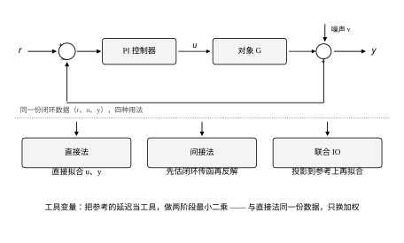
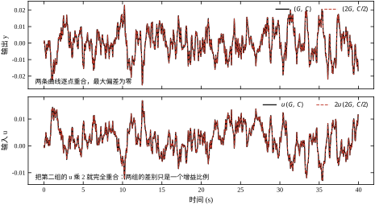
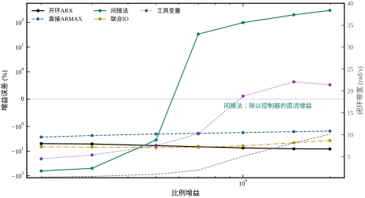
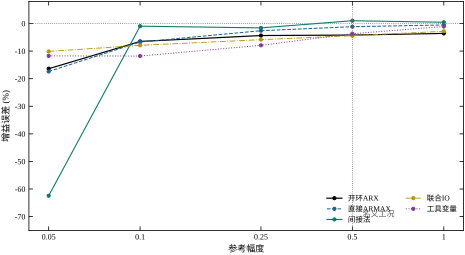
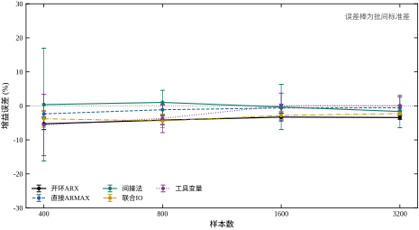
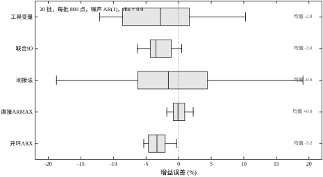

前面三章有一个共同的前提：输入是你给的，输出是对象响应。第 18 章把 PRBS 打到执行器上，第 19 章在此基础上改权重、改回归量，第 20 章把这段输入输出堆成 Hankel 矩阵。三章的方法各不相同，但数据来源是同一种——开环实验：控制器摘掉，人站在回路外面，往对象里灌一段自己想灌的信号。
现场很少给你这个机会。
一条正在运行的回路，摘掉控制器意味着产品质量立刻失控；一段高温高压的反应过程，加测试信号的幅度稍大就可能超温超压；一台连着下游设备的机组，输入扰动会直接传到下一个工段。更常见的情形是：控制器是别人写的、参数改不了，历史数据库里只有 r、u、y 三条曲线，你想建模，只能从这三条曲线里挖。这时数据是在闭环状态下采集的——u 不是你的激励，是控制器根据误差算出来的。
于是问题变成：在反馈闭合、参考信号只是正常运行时的设定值变化的情况下，能不能把对象 G 辨识出来？
这个问题比它看起来难。第 18 章的 ARX 在开环数据上，只要噪声是白的，估计是无偏的；到了闭环数据上，同一套代码、同一个对象，即使噪声是白的，估计也会有偏。原因在 §21.3 会拆开讲，这里先给结论：开环时 u 与噪声 v 独立，闭环时 u 是 v 的函数。
先做一个最朴素的实验。对象沿用第 18—20 章：
G(s)=\frac{1.8}{(0.5s+1)(0.12s+1)(0.03s+1)}e^{-0.04s} \tag{21-1}
T_s=0.05 s，采样后 3 阶、相对阶 1，真实极点 +0.1889、+0.6592、+0.9048，直流增益 1.8。
控制器用增量式 PI：
u_k=u_{k-1}+c_0(r_k-y_k)+c_1(r_{k-1}-y_{k-1}) \tag{21-2}
其中 c_0=K_c(1+T_s/2T_i)、c_1=-K_c(1-T_s/2T_i)。取 K_c=0.5、T_i=1.0 s，得 c_0=0.5125、c_1=-0.4875。闭环特征多项式
A(q)\,(1-q^{-1})+B(q)\,(c_0+c_1q^{-1}) \tag{21-3}
的四个根是 0.1752、0.8001\pm0.0987j、0.9711，闭环 -3 dB 带宽 0.963 rad/s。
参考 r 用保持 2 拍的 PRBS，幅度 0.5；测量噪声 v 是 AR(1)、\rho=0.9、标准差 0.01，加在输出端。800 点数据下：\mathrm{std}(r)=0.4998、\mathrm{std}(u)=0.2630、\mathrm{std}(y)=0.1228、\mathrm{std}(v)=0.0100，输出端信噪比 21.78 dB。
把这段 u,y 直接喂给第 18 章的 ARX（n_a=n_b=3、n_k=1），得到：
| 指标 | 数值 |
|---|---|
| 增益估计 | 1.6924（真值 1.8000） |
| 增益误差 | −5.977% |
| 极点误差（逐个配对后的最大偏差） | 0.5990 |
| 验证段自由仿真误差 | 10.94% |
极点误差 0.5990 意味着什么：三个极点里至少有一个被估到了完全不同的位置。真值最小的极点是 0.1889（时间常数约 0.35 个采样周期），它代表对象里最快的那一阶；反馈把这一段动态压得很平，u 里几乎不含激励它的成分，ARX 就把它丢到了一个离谱的位置上。
这不是一批数据的偶然。20 批蒙特卡洛（种子 100—119）下，开环 ARX 的增益误差均值 −3.204%、标准差 1.526%，最大偏差 5.345%。偏得不算离谱，但方向一致、批次之间也不互相抵消——这正是第 19 章讲过的“有偏且方差小”的形态：多测几批，只会更精确地停在错的地方。
这个错误之所以难自己发现，是因为三个常用指标都不会报警。增益偏 -5.98\%，在很多项目 ±10% 的容忍范围内；验证误差 10.94%，与直接法的 9.15% 只差不到两成；训练段拟合优度通常还在 0.95 以上。三个数字放在一份报告里，看上去是一份“精度尚可”的模型。真正露馅的地方只有一处：换一批数据重估，它还是偏同一个方向。 而现场通常只做一次试验，这一处也就被跳过了。
这也是本章为什么把 20 批蒙特卡洛放在很靠前的位置（§21.6.1）：不是为了炫耀统计，而是因为单批数字无法区分“偏差”与“运气”。一个 -5.98\% 的单批结果，既可能是系统性偏差，也可能只是一次不利的抽样；只有把分布摊开，才能看出它属于哪一种。后面的五条路线对照，也全部在同一批数据上做，就是为了让这个区分成立。
同样的数据，换成五种用法，误差可以差一个量级。图 21-1 把回路与这些用法画在一起。

开环 ARX（反面教材）。 把 u,y 当作开环数据，直接解最小二乘。上表就是它的结果。
直接法。 承认数据是闭环来的，但仍然只拟合对象：假定
y_k=\frac{B(q)}{A(q)}u_k+\frac{C(q)}{A(q)}e_k \tag{21-4}
e_k 为白噪声，用预测误差法（PEM）同时估 A,B,C。它的意思是：不管 u 是怎么来的，只要能找到一个 (A,B,C) 让残差变成白噪声，就接受它。
间接法。 不去碰对象，先辨识闭环传函
T_{yr}(q)=\frac{B(q)C_n(q)}{A(q)(1-q^{-1})+B(q)C_n(q)} \tag{21-5}
这里 C_n(q)=c_0+c_1q^{-1} 是控制器的分子。T_{yr} 用 (r,y) 估出来，再用已知的 C_n 反解 A,B。之所以叫“间接”，就是因为它辨识的不是对象，而是“对象加上控制器”这个整体。
联合输入输出法。 把 u 和 y 都投影到 r 及其延迟张成的空间上，得到一对“去噪”的 \hat u,\hat y，再对这对干净信号做开环 ARX。逻辑是：噪声与 r 不相关，r 又是唯一的外生激励，那么投影就能把噪声滤掉。
工具变量法。 用 r 的延迟当工具变量，做两阶段最小二乘。它和联合 IO 法在代数上是近亲——工具变量张成的空间就是投影空间——区别在于 2SLS 只要求工具与噪声不相关，不要求它把 u 解释得多好。
五条路线在名义工况下的成绩（同一批 800 点数据，验证用另一批独立的 800 点）：
| 路线 | 增益误差 | 极点误差 | 验证误差 |
|---|---|---|---|
| 开环 ARX | −5.977% | 0.5990 | 10.94% |
| 直接 ARMAX（n_c=2） | −2.021% | 0.1453 | 9.15% |
| 间接法 | −3.525% | 0.1773 | 9.79% |
| 联合 IO（120 拍 FIR） | −7.223% | 0.4895 | 11.67% |
| 工具变量（10 个工具） | −6.053% | 0.0946 | 11.10% |
这张表里没有一条路线是“全对”的：增益最准的是直接法，极点最准的是工具变量，验证误差最小的还是直接法。工具变量的极点误差 0.0946 是五条里最好的，增益却偏 −6.05%——极点和增益的精度不是一回事，这一点在 §21.3.5 会给出解释。
本章的实验最终收敛到三条结论，先摆在这里，后面的推导和数字都是为了支撑它们。
结论一：闭环辨识的难点不在算法，在数据里有没有“对象的信息”。 反馈的作用是让 y 跟着 r 走。控制器越强，y 越像 r，u 越是“为了抵消对象动态而算出来的补偿量”。当 T_{yr}\approx1 时，y 里几乎不含对象的痕迹，任何算法都变不出信息来。§21.5.1 会用一组 K_c 从 0.2 扫到 2.0 的数据说明：同一批算法，K_c=0.2 时间接法偏 −63.7%，K_c=2.0 时偏 +308.93%。
结论二：五条路线的差别主要在“方差”，不在“偏差”。 20 批蒙特卡洛下，直接法的均值偏差只有 +0.046%、标准差 1.152%；间接法的均值偏差 −0.587%，标准差却有 9.724%；工具变量 −2.797% ± 6.465%。间接法在期望意义上是准的，但单批结果可以从 −19% 跳到 +19%。工程上“平均准、单次飘”和“稳定地偏一点”，往往是后者更好用。
结论三：不允许开环实验时，能做的不是“硬辨”，而是“找激励”。 参考信号本身就是激励——正常运行时设定值的变化、负荷调整、牌号切换，都是免费的阶跃。把这些时段的数据挑出来，比在平稳运行段上强行辨识有效得多。§21.5.4 给出一套落地流程。
那个陷阱单独说：闭环数据在“没有外部激励”时，对象是不可辨识的。 这不是“难辨”，是“信息量为零”。§21.2.4 会给出一个精确到浮点数的反例：把 G 换成 2G、把控制器换成 C/2，输出 y 逐点完全相同，最大偏差 0.000e+00。
“用闭环数据建模”这句话在工程现场至少对应三件不同的事，混起来会让简单的活变成难活。
问题 A：求对象。 给定 (r,u,y)，估计 G=B/A。这是本章的主题，也是三者中唯一病态的——它要求把闭环的两条通道拆开。
问题 B：求闭环模型。 给定 (r,u,y)，估计 T_{yr}，用来预测“参考变了、输出会怎么走”。这里根本不需要拆开 G 与 C：T_{yr} 本身就是一个可直接辨识的传函，阶数 4、数据充足、没有除法链，§21.3.3 里那条 0/0 的病态完全不存在。
问题 C：评估控制器。 给定 (r,u,y)，判断现有回路还有多少改进空间。这连模型都不一定要——用最小方差基准或 FCOR 之类的性能指标，可以直接从闭环数据算出下界。
现场提需求时说的往往是 A，真实目的却常是 B 或 C。如果目的是预测闭环行为，就辨识闭环模型；如果是评估控制器，就别做辨识。 把 B 当成 A 来做，是本领域最常见的浪费——为了一个本不需要的对象模型，去啃一个 0/0 的除法。
后面五条路线、六张图、八个实验，全部是为问题 A 服务的。这个定位先说清，免得读者误以为本章的方法也能顺手解决 B 与 C。
本章用到的几个词在文献里有严格定义，这里统一一下，后面不再重复。
可辨识：两个不同的参数能否产生相同的数据分布，不能，就叫可辨识。§21.2.4 给的是最严格的一种——对每一个 k 都相同，不是“统计上相同”。
持续激励：信号 r 称为 n 阶持续激励，若由它及其 n 个延迟构成的自相关矩阵正定。直观说法是“r 的频谱在足够多的频点上不为零”。本章的 PRBS 在保持 2 拍、长度 800 点的条件下满足 3 阶对象所需的激励阶数；而幅度降到 0.05 时，形式上仍满足，实际的信噪比已经不够（§21.5.2）。
一致性与无偏：一致性指样本量趋于无穷时估计收敛到真值；无偏指有限样本下估计的期望等于真值。二者不等价。本章直接法在 20 批上均值 +0.046\%，是“近似无偏”；间接法均值 -0.587\% 却带 9.724% 的标准差，既谈不上无偏也谈不上有效。
记号：q 为后移算子；\Delta(q)=1-q^{-1} 是积分环节的分母；C_n(q)=c_0+c_1q^{-1} 是控制器分子；\chi(q) 是闭环特征多项式；A,B 为对象的分母与分子，B 里含 n_k=1 拍的延迟；T_{yr}、T_{ur}、S_{yr} 分别是参考到输出、参考到输入、噪声到输出的传函。阶数约定沿用第 18 章：n_a=3、n_b=3、n_k=1，B 的第一个非零系数对应 q^{-1}。
还有一个记号上的撞名要提醒：文献里 C(q) 常指控制器，本章为了与第 18 章的噪声多项式区分，控制器一律写成 C_n(q)，C(q) 只用于 (21-4) 的噪声多项式。读到别处的公式时留意这一点。
七节的分工是这样的。§21.2 把闭环的四个传函推出来，说明“对象的信息去哪了”，并给出可辨识性的精确反例与“信息窗”这个定量工具；这两件事决定了后面所有方法的成败边界，不是背景知识。§21.3 做推导：偏差的代数来源、PEM 为什么逃得掉、间接法的两条除法链、投影类方法的截断与方差、极点与增益的敏感度差异，最后用频域权重把五条路线统一成四种应对。§21.4 讲实现，七个易错点全部来自实际调试。§21.5 讲边界：控制器强度、激励幅度、数据长度三个可调量各自的账，以及不允许开环实验时的六步流程。§21.6 用八组实验把前面的结论逐个量化。§21.7 收口。
给两类读者两条不同的路线。要马上用的人走 §21.1.3 → §21.5.4 → §21.6.4 → §21.7.2：先看五条路线的成绩单，再照六步流程做，最后用复现清单核对脚本、用错误清单自查。这条路线不需要读任何推导，但它要求你信任 §21.6 的数字，并且接受“选路线比调参数重要”这个前提。要弄懂为什么的人走 §21.2 → §21.3 → §21.6：先把四个传函与信息窗建立起来，再看偏差怎么从 u 与 e 的相关性里长出来，最后用八组实验验证每一步推导。
两条路线共享一个判据，就是 §21.2.5 的信息窗。它是本章唯一一个“看一眼就知道能不能做”的工具：把闭环带宽与对象的极点转折频率画在同一根频率轴上，落在窗外的动态就不用指望了。后面所有的“为什么这条路线在这里失效”，追到底都是这句话。
§21.1 里的 T_{yr} 是直接写出来的，没交代来历。这一节把闭环的四个传函一起推一遍，后面五条路线的代数关系全部挂在这四个式子上。
对象沿用 (21-1) 的采样模型，延迟一拍已经折进 B 的前导零：
y_k=\frac{B(q)}{A(q)}u_k+v_k,\qquad B(q)=b_1q^{-1}+b_2q^{-2}+b_3q^{-3} \tag{21-6}
控制器 (21-2) 写成算子形式，记 \Delta(q)=1-q^{-1}：
\Delta(q)\,u_k=C_n(q)\,\bigl[r_k-y_k\bigr],\qquad C_n(q)=c_0+c_1q^{-1} \tag{21-7}
把 (21-6) 代入 (21-7)，两端乘 A(q)，合并同类项：
\chi(q)\,y_k=B(q)C_n(q)\,r_k+A(q)\Delta(q)\,v_k \tag{21-8}
\chi(q)=A(q)\Delta(q)+B(q)C_n(q) \tag{21-9}
\chi 就是 (21-3) 那个闭环特征多项式，四个根 0.1752、0.8001\pm0.0987j、0.9711。再把 (21-8) 的 y 代回 (21-7)，得到 u 的表达式：
\chi(q)\,u_k=A(q)C_n(q)\,r_k-A(q)C_n(q)\,v_k \tag{21-10}
(21-8) 与 (21-10) 是本章所有代数关系的母式。从它们直接读出四个传函：
| 通道 | 表达式 | 常用符号 |
|---|---|---|
| 参考 → 输出 | B C_n/\chi | T_{yr} |
| 噪声 → 输出 | A\Delta/\chi | S_{yr} |
| 参考 → 输入 | A C_n/\chi | T_{ur} |
| 噪声 → 输入 | -A C_n/\chi | -T_{ur} |
两个恒等式值得单独拎出来。
第一个：T_{yr}/T_{ur}=B/A=G。这是间接法能成立的唯一依据——闭环的两个通道里，对象的分子分母被完整地保留着，只是各自多乘了 C_n 与 A；控制器已知，就能把它们除掉。
第二个：1-T_{yr}=A\Delta/\chi=S_{yr}，即灵敏度函数。它不是一个新对象，而是“参考通道里被扣掉的那一部分”，而这一部分恰好就是 v 进到 y 的通道。参考通道与噪声通道在频域上互补，这个互补关系是下一节的全部内容。
\Delta(1)=0，于是 \chi(1)=B(1)C_n(1)，T_{yr}(1)=1。代入本章的数字：B(1)=0.047345、C_n(1)=0.0250、A(1)=0.026303、\chi(1)=1.1836\times10^{-3}，得到 T_{yr}(1)=1.0000、T_{ur}(1)=0.5556。
T_{yr}(1)=1 不是巧合，是积分作用的结果；也正是本章所有麻烦的源头。把三个传函的幅值在频域上摊开：
| \omega / (rad\cdots^{-1}) | 0.05 | 0.10 | 0.20 | 0.50 | 0.96 | 2.00 |
|---|---|---|---|---|---|---|
| \vert T_{yr}\vert | 0.9976 | 0.9904 | 0.9643 | 0.8458 | 0.7071 | 0.5744 |
| \vert S_{yr}\vert | 0.0554 | 0.1096 | 0.2112 | 0.4341 | 0.6093 | 0.8321 |
| \vert T_{ur}\vert | 0.5544 | 0.5510 | 0.5386 | 0.4853 | 0.4392 | 0.4651 |
读法是这样的。在 0.1 rad/s，输出有 99.0% 是参考的复制品，剩下 1% 才是“对象没跟上的那点残差”；一路要到 0.96 rad/s 才降到 70.7%，而这一列正好是 -3 dB——表里的 0.7071 与 §21.1 标称的 0.963 rad/s 是同一件事，可以互相校核。对象的信息只存在于“参考与输出之差”里，而这个差被反馈压得极小。 这就是“闭环辨识难”的物理内容，与用什么算法无关。
同一张表里还有另一半：\vert T_{ur}\vert 在整个低频段都稳在 0.55 附近。它的意思很直白——噪声每波动 1 个单位，执行器就跟着动 0.55 个单位。输出端的信噪比是 21.78 dB，看上去很干净；可执行器端的信噪比远没有这么好，因为噪声是从控制器这条支路绕进去的。
把三行数字相除，还能读出第三层意思。\lvert T_{yr}\rvert/\lvert T_{ur}\rvert 应该等于 \lvert G\rvert（因为分子分母都有 C_n/\chi）。用表里的数验一遍：0.05 rad/s 处 0.9976/0.5544=1.7995，0.10 rad/s 处 0.9904/0.5510=1.7975，0.20 rad/s 处 0.9643/0.5386=1.7904——都在 1.8 附近，且随频率升高略微下降，正对应对象三个极点带来的衰减。这个验算有两个用处：一是确认四个传函的推导与实现没错，二是提醒一件事——对象的信息在闭环数据里并没有丢，只是被包在比值里。直接法之所以能把它取出来，靠的就是让噪声模型去吸收那份“包在外面的壳”；间接法之所以病态，是因为它非要把壳剥开再除一次。
再看 S_{yr} 那一行：0.05 rad/s 处只有 0.0554，到 2 rad/s 已升到 0.8321。也就是说，噪声在低频几乎完全被反馈压住，在高频几乎完全放行。这与“积分作用抑制低频扰动”的经典结论一致，但用在这章里，它的含义是噪声地板主要铺在带宽以上——恰好是对象快极点所在的频段。噪声地板与“看不见的快动态”占同一段频率，这就是闭环辨识难的结构性原因，也是任何算法都改变不了的部分。
(21-10) 的第二项带负号，把它写成输入端的闭环方程：
u_k=T_{ur}(q)\,r_k-T_{ur}(q)\,v_k \tag{21-11}
开环数据里根本没有这一项：u 是人给的，与 v 无关，\mathbb{E}[u_kv_k]=0 是物理事实。闭环里 u 是 v 的一次滤波，二者天生相关。实测的归一化互相关，滞后 -4 到 +4：
| 滞后 | -4 | -3 | -2 | -1 | 0 | +1 | +2 | +3 | +4 |
|---|---|---|---|---|---|---|---|---|---|
| \mathrm{corr}(u,v) | -0.014 | -0.021 | -0.005 | +0.001 | +0.007 | +0.024 | +0.014 | -0.010 | -0.037 |
九个滞后上没有一个是零。数值都不大（最大 0.037），但最小二乘的正交条件 \mathbb{E}[\varphi_k e_k]=0 要求的是精确为零，不是“差不多小”。方向上也能对上：噪声把 y 抬高，控制器就把 u 压低，u 与噪声反相，回归于是把增益往小里估——实测 -5.977\%，符号与 (21-11) 里那个负号一致。
这里要说清一件事，免得读者误会：u 与 v 的相关性不是“噪声漏进了执行器”这种故障，它是反馈的正常工作方式。只要回路闭着，这一项就存在；\vert T_{ur}\vert 越大（控制器越猛、对象越迟钝），这一项越强。
但表里的相关系数最大只有 0.037，为什么这么小，却能把增益拉偏 6%？因为两者量的不是同一件事。相关系数归一化掉了 u 与 v 各自的方差，而最小二乘的偏差取决于未归一化的互协方差与 \Phi^\top\Phi 的乘积：(21-15) 里 \frac1N\sum\varphi_k e_k 的量级由 \sigma_u\sigma_e 决定，而分母 \frac1N\sum\varphi_k\varphi_k^{\mathsf T} 的对角元是 \sigma_u^2 与 \sigma_y^2。两者相除之后，偏差的量级是 \rho_{uv}\cdot\sigma_e/\sigma_u——相关系数被 \sigma_e/\sigma_u 这个比值放大。本章 \mathrm{std}(u)=0.2630、噪声经 A 上色后又放大了若干倍，这个比值并不小，于是 0.037 的相关性可以撑起 6% 的偏差。
这也解释了为什么“看一眼互相关，发现很小，就认为没问题”是错的——§21.7.2 错误 3 说的就是这个。互相关的绝对值没有判据，必须把它与 \sigma_e/\sigma_u 一起看，或者干脆换一个不依赖它的诊断（残差与 u 的互相关，那里 \sigma_e 已经是残差尺度，不再被放大）。
“可辨识”是个可以写清楚的定义：从数据分布到模型参数的映射是单射。 两个不同的参数，如果能产生统计上无法区分的数据，就不可辨识。
现在把外部激励关掉，r_k\equiv0，回路只由 v 驱动。取任意 \lambda>0，构造另一个模型
B'(q)=\lambda B(q),\qquad C_n'(q)=C_n(q)/\lambda \tag{21-12}
即对象增益乘 \lambda、控制器增益除以 \lambda。代入 (21-9)，B'C_n'=BC_n，闭环特征多项式 \chi 一个字都没变；代入 (21-8)，\chi 不变、BC_n 不变，于是
y'_k=y_k,\qquad \text{对每一个 } k \tag{21-13}
而由 (21-11)，T_{ur}'=T_{ur}/\lambda，输入变成 u'_k=u_k/\lambda。
取 \lambda=2，即 (G,C)\to(2G,C/2)，实测：
| 量 | 数值 |
|---|---|
| \max_k\vert y_1(k)-y_2(k)\vert | 0.000e+00 |
| \max_k\vert u_1(k)-u_2(k)\vert | 8.403\times10^{-3} |
| u_2 与 u_1 的关系 | 逐点恰好一半 |
图 21-2 把两条曲线叠在一起看：上栏两条 y 完全重合，下栏把第二个模型的输入乘 2 之后也与第一个重合。这不是“近似相同”，是浮点意义上的恒等。

需要把这条结论的边界说准，否则容易被读成“闭环辨识永远做不了”。\lambda 这个自由度并非在任何数据上都不可辨：它只活在输出通道里。只用 (r,y) 的路线（间接法就是），r\equiv0 时在原理上无从下手；用 (u,y) 的路线在原则上能从 u 的幅度定出 \lambda，但那要求你相信噪声模型——两个候选模型对同一段 (u,y) 反推出来的噪声是 y-\lambda Gu，彼此不同，“谁更像白噪声”完全取决于假设，数据本身无法裁决。所以准确的表述是：没有外部激励时，增益的标定只能靠噪声模型的先验，不能靠数据。
这一点在实验里看得更清楚。同一段 r\equiv0 的数据上：
把这两条与 §21.1 的名义工况（同一套代码偏 -5.977\%）对照，差距是七倍。同一个对象、同一个估计器，唯一的变化是参考信号有没有动。可辨识性首先是数据的性质，其次才是算法的性质。
由此得到三条可操作的判据，本章后面每一节都在检验它们：
§21.2.2 的两张表可以合成一个更有用的概念。把参考端与噪声端的信噪比写成频域形式：在频率 \omega 处，输出里“由参考引起”的成分是 \lvert T_{yr}\rvert\lvert R\rvert，由噪声引起的成分是 \lvert S_{yr}\rvert\lvert V\rvert，二者之比
\mathrm{SNR}(\omega)=\frac{\lvert T_{yr}(e^{j\omega T_s})\rvert\,\lvert R(\omega)\rvert}{\lvert S_{yr}(e^{j\omega T_s})\rvert\,\lvert V(\omega)\rvert} \tag{21-14}
就是“这个频点上的数据值不值得信”。\mathrm{SNR}(\omega) 大的频段构成一个窗口，窗口内的对象动态能被数据看见，窗口外的只能靠模型结构去“猜”。本章叫它信息窗。
用 §21.2.2 的数字粗算：\lvert T_{yr}\rvert 与 \lvert S_{yr}\rvert 在 0.96 rad/s 处相等（都是 0.707，因为 T_{yr}+S_{yr}=1），这一点是信噪比的转折。低于它，参考占优；高于它，噪声占优，且 \lvert T_{yr}\rvert 继续下降、\lvert S_{yr}\rvert 继续上升，两条曲线一升一降，信噪比很快塌下去。再考虑参考本身的频谱（保持 2 拍的 PRBS，主要能量在 1 rad/s 以内），实际可用的窗口大约是 0.3—3 rad/s。
现在把对象的三个极点换算成频率：
| 极点 | 时间常数 / 拍 | 转折频率 / (rad\cdots^{-1}) | 是否在窗内 |
|---|---|---|---|
| 0.1889 | 0.60 | 33.3 | 否，远在窗外 |
| 0.6592 | 2.40 | 8.33 | 窗边缘 |
| 0.9048 | 9.99 | 2.00 | 窗内 |
这张表解释了 §21.1.2 那个 0.5990 的极点误差从哪来。三个极点里只有 0.9048（2 rad/s）稳稳落在窗内，0.6592（8.3 rad/s）已经在边缘，0.1889（33 rad/s）完全在窗外——那里 \lvert T_{yr}\rvert 早就跌到 0.1 以下，u 里也没有对应频率的成分。估计器对窗外的那一阶没有任何约束，只能靠“A 是三阶”这个结构假设硬凑一个位置，凑出来的数与真值相差 0.6，完全正常。
这条分析给出两个可操作的结论。
一是闭环带宽决定了可辨识的时间尺度。 对象动态比闭环带宽快十倍以上的那部分，闭环数据基本看不见。本章 33 rad/s 对 0.963 rad/s，正好是三十多倍。想辨识快动态，只能把闭环调快（不现实）或把采样与激励带到那个频段（§21.5.4 第三步）。
二是“采样率够”不等于“信息够”。 T_s=0.05 s 对应 Nyquist 62.8 rad/s，从采样定理看 33 rad/s 的极点完全可辨；但闭环把那个频段的信号压掉了，采样再密也只是把噪声采得更清楚。这是闭环辨识与开环辨识最实质的差别，也是 §21.6.3 那个“关掉噪声就归零”的对照能成立的原因——没有噪声时，窗外只剩结构约束，估计器照样能凑出正确的一阶。
信息窗解释了“哪些动态看得见”，但还有两类结构问题不在这个框架的正面，却会在现场反复出现。它们值得单列，因为它们不会被指标发现。
延迟与快极点在低频不可分。 一拍纯延迟的频率响应是 e^{-j\omega T_s}\approx1-j\omega T_s，一个时间常数为 T_s 的极点近似是 1/(1+j\omega T_s)\approx1-j\omega T_s。两者的一阶展开完全相同。差别只在 \omega T_s 接近 1 之后才显现：延迟的相位继续线性下降，极点的幅值开始按 -20 dB/dec 衰减。而 \omega T_s\approx1 对应 \omega\approx20 rad/s，恰好落在本章信息窗（0.3—3 rad/s）之外。
于是闭环数据里，“延迟多一点”与“快极点慢一点”可以互换而几乎不改变拟合误差。一个具体的表现是负实极点：z=-0.41 这样的根，其脉冲响应正负交替，等效于“半个采样周期的延迟”，正好是分数拍延迟最省参数的近似。§21.6.5 表 21-6 里开环 ARX 把最快一阶推到 -0.4101，机制就在这里——它不是“发现了对象的快动态”，而是用一个负极点去顶替它估不准的那部分相位。
这件事的工程后果比数字本身严重：负实极点带 180^\circ 相位翻转，若拿这个模型去整定，控制器会被告知“对象在高频反相”，整定出来的增益会偏保守；若拿去做 Smith 预估，延迟被吸收进极点，预估器补偿的量就错了。判据很简单：辨识结果的极点若落在负实轴上，先怀疑延迟与快极点发生了互换，而不是相信对象真有反相动态。 处置办法是固定延迟、只估动态，或减小采样周期重采（§21.5.4 已提过）。
积分环节在闭环里会“藏起来”。 若对象本身含积分（液位、储罐、气体缓冲），它的极点精确在 z=1。闭环辨识要估这个极点，而 z=1 正是 S_{yr} 的零点位置：反馈把直流附近的误差压得最狠，数据在 z=1 邻域的能量最少。结果是估出来的极点会在 0.98 到 1.02 之间摇摆——在拟合窗内几乎无差别，外推几百步后却是“收敛”与“发散”的区别。
本章对象没有积分环节，所以算例都回避了这个问题；但现场的液位回路几乎全是这一类。可用的判据是：不要看极点估计值本身，而看长时间自由仿真的漂移方向。若模型在验证段上缓慢地单向漂移，说明积分那一段没估准，此时应把积分作为结构约束固定住（把 A(1) 约束为零），只估其余系数，而不是让优化器自由去拟合那个几乎不可辨的根。
两个问题的共同点是：信息窗之外的结构，算法只能用别的东西去顶替。延迟用负极点顶替，积分用慢极点顶替，顶替出来的模型在训练段上一样好看。识破它们只能靠结构检查（极点在不在负实轴、A(1) 接不接近零），不能靠误差指标。
四个传函共用同一个分母 \chi，所以它们的极点完全相同，差别全在分子。把这件事摊开看，能解释好几处“为什么这个通道对某个频段特别敏感”。
\chi 的四个根分三档。0.1752 对应时间常数 0.57 拍，几乎是一拍就消失；0.8001\pm0.0987j 模长 0.8062、阻尼约 0.87，时间常数 4.6 拍；0.9711 时间常数 34 拍，是整条回路最慢的一档。三档差了六十倍，这决定了需要多长的数据：最慢那一档要看清，至少得观察到若干个 34 拍，本章 800 点（约 23 个时间常数）是够的；而 400 点只剩 11 个，慢动态的估计就开始飘——这与表 21-3 的 400 点一行互相印证。
零点则决定“哪些频率被挡掉”。
一个反过来的读法是：闭环辨识真正要估的是分子，而分子里混着控制器的零点。 控制器已知时这个零点可以被除掉，但除掉它的那一步正是全章最病态的一步。若控制器未知（比如只拿到一段黑箱 DCS 数据），分子里就同时有两个未知量，间接法直接失效——这也是 §21.5.4 的数据字典里必须问清“控制器整定值是多少”的原因。
“信息窗”这个概念要在现场用起来，只需要三步，而且都不需要先有对象模型。
第一步，拿到 T_{yr} 与 S_{yr} 的粗略频响。 若控制器与对象的大致模型都在手，直接用 (21-9) 算 \chi，再按 §21.2.1 的四个传函求值，本章的频响表就是这么来的。若没有模型，用闭环带宽 \omega_c 作近似：\omega<\omega_c 时取 \lvert T_{yr}\rvert\approx1、\lvert S_{yr}\rvert\approx0（更准确地说是 \lvert S_{yr}\rvert\approx\omega/\omega_c），\omega>\omega_c 时反过来。这个近似在转折点附近误差大，但窗口的边界本来就不是一条硬线，够用。
第二步，估参考谱与噪声谱。 参考谱由激励的形状决定：阶跃序列按 1/\omega 衰减，保持 h 拍的 PRBS 按 \mathrm{sinc}^2 衰减（§21.5.2）。噪声谱从一段平稳运行数据估出来——拟合一个低阶 AR，再把它的频响代进去；v 若是“慢漂移叠快抖动”，这条谱会是一条低频翘起的曲线，而不是平的。这一步最容易被跳过，而它恰恰决定了窗口的高频边界。
第三步，把两条曲线相减，再叠上对象的极点。 \mathrm{SNR}(\omega) 取 dB 后，与 0 dB 的交点就是窗口边界；把对象每个极点的转折频率（-T_s^{-1}\ln\lvert z_i\rvert 换成 rad/s）画在同一根轴上，落在窗口外的极点就是“猜出来的”。
三步做完，通常会发现窗口比想象中窄。窗口窄不等于不能做，而是要求降阶。 若窗口只覆盖 0.3—3 rad/s，那就在这个频段里拟合一个低阶等效模型，把窗外的高频动态折进延迟或直接忽略；硬要用三阶去覆盖 33 rad/s 的那一阶，得到的就是 §21.6.5 表里那些散落的极点。
最小二乘的解可以写成一句精确的话：
\hat\theta_N-\theta_0=\Bigl[\frac1N\sum_{k}\varphi_k\varphi_k^{\mathsf T}\Bigr]^{-1}\frac1N\sum_k\varphi_k e_k \tag{21-15}
右端第二个因子是偏差的全部来源。只要它非零，加大 N 不会让 \hat\theta 收敛到 \theta_0，只会让它更稳定地停在“互相关矩阵乘噪声矩”这个错位置上——这就是“有偏且方差小”的代数含义。
把 \varphi_k=[-y_{k-1},-y_{k-2},-y_{k-3},u_{k-1},u_{k-2},u_{k-3}]^{\mathsf T} 拆成两块看。y 那一块是干净的：
\mathbb{E}[y_{k-i}e_k]=0,\qquad i\ge1 \tag{21-16}
因为 e_k=A(q)v_k 里最新的一项含 v_k，而 y_{k-i} 里最年轻的噪声是 v_{k-i}。开环时 u 那块也干净（u 与 v 独立）。闭环时由 (21-11) 得
\mathbb{E}[u_{k-i}e_k]=-\sum_{j\ge0}h_j\,\gamma_e(j+i)\ne0 \tag{21-17}
h_j 是 T_{ur} 的脉冲响应，\gamma_e 是 e 的自协方差。这个式子把闭环偏差说尽了：它只来自输入块，大小由 \{h_j\} 与 \{\gamma_e\} 的错位重叠决定。
三个推论可以直接读出来：
实验 2 检验的正是这三条的反面。把噪声从白（\rho=0）改到 \rho=0.97，开环 ARX 的偏差依次是 +2.768\%、-2.134\%、-4.187\%、-3.728\%：同一列里符号会变。原因在 (21-17)——\gamma_e 的形状既由 \rho 决定、也由 A 决定，两者一起换色时，重叠项的符号没有理由固定。“闭环一定带来负偏”这类教条在这里不成立。反过来说，任何一个只在一两种噪声颜色下验证过的方法，都不足以支撑“闭环可用”这个结论。
直接法用的是另一种判据。PEM 最小化
V_N(\theta)=\frac1{2N}\sum_k\varepsilon_k^2(\theta),\qquad \varepsilon_k(\theta)=y_k-\hat y_{k\mid k-1}(\theta) \tag{21-18}
一阶条件不是“回归量与残差正交”，而是
\frac1N\sum_k\psi_k(\theta)\,\varepsilon_k(\theta)=0,\qquad \psi_k=\frac{\partial\hat y_{k\mid k-1}}{\partial\theta} \tag{21-19}
在真值处 \varepsilon_k 就是新息。新息有一个最小二乘残差没有的性质：它与一切用过数据的函数都不相关，包括 u_{k-1},u_{k-2},\dots。不是因为 u 干净，而是因为“用 k-1 时刻以前的信息去预测 k 时刻的噪声”这件事本身没有信息可用。
所以反馈破坏不了它。反馈把 u 变成 v 的函数，但 u_{k-i}（i\ge1）依赖的是 v_{k-i}，新息 \varepsilon_k 与 v_{k-i} 独立。物理条件 u\perp v 被破坏了，统计条件 \psi\perp\varepsilon 没有被破坏。这是 PEM 与最小二乘最本质的分野：前者要求残差是白的，后者要求输入是干净的。
这个论证有两个前提，缺一不可：噪声模型能表示真实噪声，r 足够丰富。前者对应 (21-4) 里的 C(q)。本章把它取到 n_c=2，足以白化 AR(1)。实验 5b 扫了 n_c=0,1,2,3，增益误差分别是 -2.106\%、-2.074\%、-2.021\%、-2.011\%——四个数挤在 0.1 个百分点内，说明本例里“白化的程度”根本不是瓶颈，瓶颈在数据。
还有一层容易被忽略：新息正交是统计意义上的，不是逐点的。 在有限样本里，\frac1N\sum\psi_k\varepsilon_k 不会精确为零，它有一个 O(1/\sqrt N) 的随机量，这个量就是直接法 1.152% 标准差的来源（表 21-4）。换句话说，PEM 把“偏差”消掉了，但“方差”一点没少，还得靠数据量与信噪比去压。工程上常见一种误判：看到直接法的结果还在 ±1% 上下跳，就以为“方法也有偏”，于是去调噪声阶数或初值——那是把统计波动当成了系统误差。
与工具变量对照一下更清楚。工具变量的矩条件是 \mathbb{E}[z_k e_k]=0，z 取 r 的延迟；PEM 的矩条件是 \mathbb{E}[\psi_k\varepsilon_k]=0，\psi 取预测对参数的导数。两者的形式相同，差别在“用什么做工具”：前者的工具是人选的，后者的工具由模型结构自动给出。人选的工具可能选弱了（本章 10 个延迟，弱激励下撑不住），自动给出的工具则总是与残差同步更新，所以 PEM 的方差通常更小——表 21-4 里 1.152% 对 6.465%，差五倍多。
间接法先估 T_{yr} 再反解，中间要做两次多项式除法。第一次除已知的 C_n：
B(q)=\frac{\operatorname{num}\bigl[T_{yr}\bigr]}{C_n(q)} \tag{21-20}
第二次更麻烦：
A(q)=\frac{\chi(q)-B(q)C_n(q)}{\Delta(q)} \tag{21-21}
(21-21) 的分子在 q=1 处本该精确为零，因为 (21-9) 在 q=1 给出 \chi(1)=B(1)C_n(1)；而分母 \Delta(1)=0。这是一个 0/0 的除法。分子上任何一点估计残差 \delta，除以 |\Delta| 之后都会在低频被放大：
\vert\Delta(e^{j\omega T_s})\vert=\bigl\vert1-e^{-j\omega T_s}\bigr\vert\approx\omega T_s \tag{21-22}
在 0.1 rad/s 处 |\Delta|\approx5\times10^{-3}，放大两百倍量级。这就是间接法“期望上准、单批飘”的原因：20 批均值 -0.587\%，标准差却 9.724\%，是直接法的八倍多。K_c 一加大，闭环传函在更宽的频带里贴近 1，\chi 与 B C_n 近似对消，分子上的残差更大而放大倍数不变，误差就爆掉——实验 5 里 K_c 从 0.5 走到 2.0，间接法从 -3.53\% 走到 +308.93\%。
顺便解释一个常见误解：(2G,C/2) 那个反例说明间接法在无激励时会失效，但不是说“只要控制器已知间接法就一定行”。除法链本身就把误差放大了两个数量级，控制器已知只能免掉第一个未知量，免不掉这个病态。
两条路线都把数据压到 r 张成的子空间里。设 R 为 r 的若干延迟排成的矩阵，投影算子
P_r=R\,(R^{\mathsf T}R)^{-1}R^{\mathsf T},\qquad \hat u=P_ru,\qquad \hat y=P_ry \tag{21-23}
联合 IO 直接对 (\hat u,\hat y) 做 ARX；工具变量则把投影作用在回归矩阵上，\hat\Phi=P_r\Phi，再解 \hat\Phi 的最小二乘。二者是近亲，差别在于投影作用在数据上还是作用在回归量上。
它们能成立，靠的是 u=T_{ur}r-T_{ur}v 这个分解：r 与 v 独立，所以 P_ru\approx T_{ur}r、P_rv\approx0，于是 \hat y\approx G\hat u。这个“\approx”有两个缺口，都能测出来：
工具变量只取 10 个延迟，是同一折中偏向方差一侧的选择。它换来的是五条路线里最小的极点误差 0.0946，代价是最大的增益偏差之一（-6.053\%）。
投影长度有一个可以照抄的经验规则：取闭环最慢时间常数的 3 到 4 倍。本章最慢闭环极点 0.9711 对应 34 拍，34\times3.5\approx120，就是实验里用的数。依据不复杂——FIR 要装下 T_{ur} 的尾巴，而尾巴的衰减速度由最慢极点决定；装到 3 个时间常数以外，剩下的部分已经小于 5%，再往里加就是纯方差。若闭环最慢极点接近 1（比如带大积分时间的回路），这个规则会给出一二百拍的投影长度，此时更该考虑的不是加长，而是换一条不依赖投影的路线。
上一条留了个疑问：极点最准的路线，增益却不准。这不是巧合，是敏感度不同。
直流增益是 B(1)/A(1)，而 A(1)=1-1.7530+0.8919-0.1127=0.026303——四个 O(1) 的数相减剩下来的一点余量。系数上 1\% 的误差传到 A(1) 上会被放大三十多倍，再传到增益上。极点不是这样：根的敏感度由 \partial z/\partial a_i 决定，对本章这种极点分散（0.19、0.66、0.90）的系统，条件数并不大。
所以“极点误差 0.0946、增益误差 -6.05\%”这样的组合完全可能出现：投影改善了中频段回归量的正交性，中频段正是决定极点的频段；而直流增益要的是低频段那一点余量，投影帮不上忙，反而因为秩只有 10 而把低频细节抹平了。
工程含义很直接：报指标时不能只报一个“模型误差”。 用于整定的模型，极点（相位）比增益重要；用于前馈或稳态优化的模型，增益比极点重要。第 18 章起就一直用的自由仿真误差是一个折中的标量，它掩盖了这种分化——本章五条路线的验证误差从 9.15% 到 11.67% 相差不到三成，而增益误差相差三倍半。
(21-17) 说的是“输入块与噪声错位重叠”，这是时域说法。换成频域，同一件事可以说得更直观，也顺便把五条路线统一起来。
参数估计的渐近解可以写成加权逼近问题：
\theta^\ast=\arg\min_\theta\int_{-\pi}^{\pi}\frac{\lvert G(e^{j\omega})-G_\theta(e^{j\omega})\rvert^2\,\Phi_u(\omega)}{\lvert W(e^{j\omega})\rvert^2}\,d\omega \tag{21-24}
\Phi_u 是输入谱，W 由所选的模型结构决定：ARX 对应 W=A，输出误差结构对应 W=1，带前置滤波的 PEM 对应 W 为那个滤波器。这个式子的意思是：估计器只在输入有能量的频段上认真拟合，权重就是 \Phi_u。
闭环下 \Phi_u 有两个成分：
\Phi_u(\omega)=\lvert T_{ur}\rvert^2\,\Phi_r(\omega)+\lvert T_{ur}\rvert^2\,\Phi_v(\omega) \tag{21-25}
第一项是“参考给的”，第二项是“噪声搬进来的”。第二项就是噪声地板——即使某个频段参考完全没有能量（\Phi_r=0），\Phi_u 也不为零。估计器看见这里有输入，就会去拟合这里的输出，而这里的输出全部由噪声驱动，拟合的结果只能是偏差。
(21-17) 与 (21-25) 是同一个事实的两种写法：前者说“u 与 e 相关”，后者说“\Phi_u 里有一块是噪声”。二者都指向一件事——闭环给估计器提供了假的激励。
五条路线的差别，可以统一看成“怎么处理这个假的激励”：
这样一来，五个方法就不再是“五个技巧”，而是对同一个频域问题的五种应对：接受它、整形它、绕开它、削掉它。 剩下的差别只在代价：接受它要承担偏差，整形它要正确的噪声模型，绕开它要付出病态，削掉它要选择投影长度。工程选型就是在这四种代价里挑一个自己能承受的。
最后补一句关于权重 (21-24) 的实用含义：既然估计器只在意“输入有能量的频段”，那么想让它把哪一段辨准，就得让那一段的输入有能量。这比调算法有效得多，也是 §21.5.2 那个“幅度实验”背后的机理——提高幅度等价于抬高整条 \Phi_u，把噪声地板相对压下去。
(21-22) 说的是“放大量级”，但放大到什么程度、放大在哪一段，还能再算细一点。两条除法各有一个 0/0 点，位置不同，伤害的对象也不同。
第一条 B=\operatorname{num}[T_{yr}]/C_n 的除数是 C_n(q)=c_0+c_1q^{-1}，它的零点在
z_{c}=-\frac{c_1}{c_0}=\frac{0.4875}{0.5125}=0.9512 \tag{21-26}
这个位置很要命：它紧挨着闭环最慢的极点 0.9711。而 T_{yr} 的数据恰恰由这个最慢极点主导，分子 \operatorname{num}[T_{yr}]=B C_n 在 z_c 处理论值为零，估计误差却不为零。于是在数据能量最集中的频段上，商的两个成分一个是 0、一个是 \delta，商就被 \delta 支配了。这不是“数据不够”，是除法本身在 z_c 附近没有定义。
第二条 A=(\chi-BC_n)/\Delta 的除数是 \Delta=1-q^{-1}，零点在 z=1，即直流。它伤害的是 A(1)，也就是直流增益。这解释了一个此前只能观察、不能解释的现象：间接法的增益误差随 K_c 爆炸（表 21-1，-3.53\% 到 +308.93\%），而极点误差始终维持在 0.177 这一档（表 21-6）。因为 K_c 增大时 \chi 与 B C_n 在整个频带内更贴近，分子 \chi-BC_n 的绝对值更小，除以 \Delta 之后低频段被放大的那部分占比更高；而 z_c 附近的除法条件并没有随 K_c 改善多少，所以极点误差原地不动。
方差还可以从另一头看：代价函数在哪些方向上是平的。 间接法估的是 8 个参数的闭环传函，而闭环数据在信息窗之外的频段几乎没有能量，那些频段对应的参数方向在代价函数上就是平的。LM 停在哪里取决于初值与迭代路径，于是同一套真值、不同的噪声实现会给出差别很大的参数——这就是批间散布的直接来源。20 批标准差 9.724\%（表 21-4）不是“这一批数据特别差”，而是“平方向上的位置本来就随机”。
样本量能压掉其中一部分，但压不干净。表 21-3 里间接法从 400 点到 3200 点（8 倍），标准差从 16.57% 降到 4.76%，比值 0.287，而 1/\sqrt{8}=0.354——降得比理想还快一点，说明那一段里确实有统计成分。但即使到 3200 点，4.76% 仍是直接法（0.67%）的七倍。剩下的那部分不随 N 下降，因为它不来自抽样波动，而来自除法链的传递增益。 这与开环 ARX 的情形在数学上同构：一个是偏差不收敛，一个是方差里有一块不收敛，处置办法都一样——换方法，不是加数据。
由此可以给“选路线”一条更硬的判据：不要问“哪个方法更准”，要问“我的误差里哪一块会随投入下降”。加幅度、加时长能压的是抽样那一块；换路线能改的是传递增益那一块。两块的比例可以从表 21-3 直接估：同一格里的标准差随 N 的变化率，就是抽样块的占比。
前面把五条路线拆得很细，落到选型时其实只需要按顺序问四个问题。顺序很重要，因为前面的问题能一票否决后面的。
第一问：控制器参数知不知道？ 不知道就排除间接法。间接法是唯一依赖 C_n 的路线，而 C_n 一旦未知，T_{yr} 的分子里就有两个未知量，反解无从下手。现场常见的“只有历史数据、DCS 里查不到整定记录”就属于这一种。
第二问：参考动没动？ 没动就不要做辨识（§21.2.4）。这一问不看数据长度、不看算法，只看 \mathrm{std}(r) 与 \mathrm{std}(u) 的量级。很多项目的失败就卡在这里——不是方法选错，而是本来就没有信息。
第三问：控制器有多猛？ K_c 大到让闭环带宽接近对象最快的时间常数时，间接法的除法链会爆（表 21-1），排除。K_c 小到回路迟钝时，工具变量的方差会吃掉精度（-20.51\%），优先级降低。
第四问：数据有多长、噪声有多色？ 数据短（不足 800 点）时直接法最稳；噪声颜色未知时，间接法那种对颜色极度敏感的方法（表 21-5，跨度 22 个百分点）不能要。
四问走完，剩下的通常只有直接法。这不是偏袒，而是它的前提最少：只要噪声模型能表示真实噪声、参考足够丰富，它就近似无偏，且不依赖控制器是否已知、K_c 大不大、数据有多长。五条路线里只有它是“默认选项”，其余四条各自有一个必须满足的前提。
那什么情况下不选直接法？三种例外值得记住。一是噪声严重非平稳（比如开车阶段的漂移），PEM 的似然假设失效，此时用投影类方法先把非平稳段剔掉更稳。二是模型只用于闭环带宽以内的控制设计，此时降阶的直接法（2 阶而不是 3 阶）往往比三阶更准，因为窗外那一阶本来就在猜。三是在线辨识、算力受限的场合，ARX 加工具变量的计算量比 LM 小一个量级，代价是可以接受的偏差。
把这四条与 §21.7.3 的自查表连起来看：四个问题决定“用什么”，自查表决定“结果可不可信”。两者都答完，才算把方法选明白了。
闭环仿真的递推只有四行，但顺序不能错：
for k in range(n):
acc = 0.0
for j in range(1, B.size):
if k - j >= 0:
acc += B[j] * u[k - j]
for j in range(1, A_TRUE.size):
if k - j >= 0:
acc -= A_TRUE[j] * yd[k - j]
yd[k] = acc # 干净输出
y[k] = yd[k] + v[k] # 叠加测量噪声
e = r[k] - y[k]
u[k] = (u[k - 1] if k else 0.0) + c0 * e + c1 * e_prev
e_prev = e关键在 yd 与 y 分开。对象的递推用的是 yd，控制器看到的是 y。如果图省事把带噪声的 y 直接喂回对象的 1/A 递推，噪声就会被 1/A 反复放大，凭空造出一段“对象动态”，辨识出来的极点全是假的。这是闭环仿真最常犯的错，且症状很隐蔽——模型在验证段上表现反而变好，因为它学到的是噪声的自相关，不是对象的动态。
另三处设定：
seed 决定；噪声用另一条独立种子。二者必须独立，否则“投影到 r 上”就变成了“投影到噪声上”。seed=500），只取后半段算误差，避开初始瞬态。regressors 把 u,y 拼成 \Phi，行从 k_0=\max(n_a,n_k+n_b-1)=3 开始，列依次是 -y_{k-1},-y_{k-2},-y_{k-3},u_{k-1},u_{k-2},u_{k-3}。三个指标各有分工：
def gain_err(b, a): # 直流增益的相对误差，%
return (np.sum(b) / np.sum(a) / gain_true() - 1.0) * 100.0
def pole_err(a): # 按模长配对后逐个比较，取最大偏差
...
def val_err(u, y, a, b, tail=0): # 自由仿真误差，按 y 的标准差归一化
...pole_err 的配对规则要写清：先按 |z| 升序排两边的极点，再逐个作差取最大。本章的真实极点 0.1889、0.6592、0.9048 模长互不相同，按模长排序是唯一稳定的配对方式；若真实极点有共轭对，必须强制配对成一对，否则实部相同的两个根会被排错序，误差虚高。
val_err 用自由仿真而不是单步预测。这个选择有代价：自由仿真对极点误差极其敏感（极点 0.95 与 0.90 在 800 步上能差出一倍），所以它会把“极点略偏”放大成很大的百分比；好处是它对应工程上真正关心的事——拿这个模型去做前馈或仿真，误差有多大。
间接法要用到两次多项式除法，实现只有十几行，但方向不能反：
def pdiv(p, q, tol=1e-12):
p, q = np.asarray(p, float).copy(), np.asarray(q, float)
# 先掐掉首端可忽略的系数（升幂表示，末尾是最高次）
while p.size > 1 and abs(p[-1]) < tol: p = p[:-1]
while q.size > 1 and abs(q[-1]) < tol: q = q[:-1]
if p.size < q.size: return np.array([0.0])
out = np.zeros(p.size - q.size + 1)
for i in range(out.size - 1, -1, -1): # 从最高次往前回代
c = p[i + q.size - 1] / q[-1]
out[i] = c
p[i:i + q.size] -= c * q
return out三个细节值得记下来。
一是从最高次往前回代。 除法要“消掉当前最高次项”，只能从上往下做；若从常数项开始，减完会污染已经算好的低位系数。写反了不会报错，只会给出一组看着合理、其实全错的结果。
二是 tol 的作用。 理论上 B(q)C_n(q) 除以 C_n(q) 余式为零；数值上余式是 10^{-16} 量级，而商的高次项可能是 10^{-3}。不掐掉这些小系数，p 的阶数会虚高一位，out 的长度就错了，返回的 b 与 a 对不上，后续卷积全部错位。
三是它假设精确整除。 pdiv 不做余式检查，因为估计出来的分子 B C_n 一定带误差，余式永远不为零。这意味着误差被无声地吸进商里——这正是 §21.3.3 那条放大链在代码层面的样子。工程实现里应当加一个断言，检查余式的范数相对于 p 的范数是否可忽略，本章的实验脚本为了看“最坏情况”没有加。
armax_pem 用 LM 在 \theta=[a_1,a_2,a_3,b_1,b_2,b_3,c_1,c_2] 上做非线性最小二乘，初值取 ARX 解加 c\equiv0。核心是残差函数：
def resid(th):
a = np.concatenate([[1.0], th[:na]])
b = th[na:na + nb]
c = np.concatenate([[1.0], th[na + nb:]])
if np.max(np.abs(np.roots(a))) > 1.0:
return np.full(y.size - k1, 1e2) # 不稳定候选直接挡掉
w = y - free_sim(u, a, b, nk) # 仿真误差，只用 u 和模型
e = np.zeros(y.size)
for k in range(y.size):
acc = w[k]
for i in range(1, nc + 1):
if k - i >= 0:
acc -= c[i] * e[k - i]
e[k] = acc # 过 1/C 白化
return e[k1:]这里有一个刻意的选择：残差取仿真误差 w=y-\hat y_{\text{sim}}，而不是方程误差 Ay-Bu。方程误差里含有测到的 y，也就是含 v；而 v 又通过 (21-11) 进了 u。用它做残差，等于把 (21-15) 那条偏差通道原封不动地搬回来，ARMAX 就退化成了 ARX。仿真误差只用到 u 和模型参数，噪声进不来。
那段稳定性护栏也不是装饰。LM 在迭代中会试探不稳定的 A（极点跑到单位圆外），此时 free_sim 指数发散，几百步内就溢出成 inf，整个拟合被一个坏候选毁掉。护栏的做法是把这类候选的残差直接置成 10^2，让 LM 自己退回来。同样的检查也加在 val_err 里：极点出圈时自由仿真没有意义，直接返回 nan，不要让它污染平均值。
联合 IO 的投影是逐点的 FIR 维纳滤波：
def proj_fir(x, r, nz=12, nk=0):
rows = np.arange(nz + nk, x.size)
Z = np.column_stack([r[rows - nk - i] for i in range(nz)])
f = np.linalg.lstsq(Z, x[rows], rcond=None)[0]
return filt(np.concatenate([[0.0] * nk, f]), [1.0], r)注意最后一行把系数作用在整段 r 上，而不只是 rows 那一段。这样 \hat u 与原始 u 等长、时间对齐，后面才能直接拼回归矩阵；若只在 rows 上算，长度会短一截，所有滞后都要跟着改，极易错位。
工具变量的两阶段是标准的 2SLS：
Z = np.column_stack([r[rows - i] for i in range(nk, nk + nz)])
Pi = Z @ np.linalg.lstsq(Z, Phi, rcond=None)[0] # 第一阶段：投影回归量
th = np.linalg.lstsq(Pi, y[rows], rcond=None)[0] # 第二阶段用 Z @ lstsq(Z, Phi) 而不是 Z @ inv(Z.T@Z) @ Z.T @ Phi，是为了避免显式求逆——工具矩阵在 r 幅度小时接近奇异，显式求逆会把条件数平方。这也是 §21.2.4 里“无激励时秩 0/10”能被稳稳诊断出来的原因：lstsq 用 SVD，秩亏时给最小范数解，不抛异常。
为了让对照公平，五条路线写在同一个字典里，输入完全相同的 (r,u,y)：
def fits(u, y, r, nc=NC_DEF):
out = {}
out["开环ARX"] = arx_fit(u, y)
a, b, _ = armax_pem(u, y, nc=nc); out["直接ARMAX"] = (a, b)
out["间接法"] = indirect_fit(u, y, r)
out["联合IO"] = joint_io_fit(u, y, r)
out["工具变量"] = iv_fit(u, y, r)
return out这样写有两个目的。一是排除“预处理不同”这个借口：不做中心化、不做去趋势、不剔除前 100 点，谁都是一样的生数据。二是让实验 2、3、7 的批平均只需换一个参数——avg_fits 在外层循环种子，内层调 fits，二十行代码扫完整个参数面。
间接法的反解单独说一句。它估的是 4 阶闭环传函（na_cl=4, nb_cl=4），因为 T_{yr} 的分母是 \chi，阶数为 3+1=4；分子是 B C_n，阶数也是 3+1=4。这两个阶数必须给足，少一阶就变成“用低阶模型拟合高阶真值”，误差里混进了模型失配，就分不清是算法病态还是阶次不够了。
还有一层公平性问题要说清：五条路线的参数预算并不相同。开环 ARX 与工具变量各估 6 个对象参数；直接法多估 2 个噪声参数；间接法估 8 个闭环参数再反解；联合 IO 的 FIR 有 120 个系数。这个差别不是“谁作弊”，而是方法本身的代价——联合 IO 用 120 个自由度换掉偏差，代价是方差；间接法用 8 个参数换掉对噪声模型的依赖，代价是除法链。比较时若只看最终增益误差，就容易得出“工具变量最差”这种结论，而实际上它只用了 6 个参数、没有噪声模型、计算量最小。报结果时必须同时报参数预算，否则比较不成立。
这一节的七条都不涉及理论，全部是可以一行改错、然后花两天找不到原因的地方。它们的共同特征是不报错：程序跑完、曲线看着合理、数字落在可信区间里，只是系统性偏了一点。
一、升幂与降幂混用。 本章所有多项式都是升幂（a[0] + a[1]q^-1 + ...），而 np.roots 按降幂解释。两者恰好互逆，所以 np.roots(A_TRUE) 直接给出极点是对的——但这个“恰好”很容易被误当成“约定一致”，于是在别处写出 np.polyval(A, z) 去求 A(z^{-1})，结果全错。ev 函数里的 np.polyval(p[::-1], 1.0/z) 就是为此写的：先翻转，再把 z^{-1} 代进去。凡是求值，一律走 ev；凡是求根，一律直接交给 np.roots。混用一次，频响表里每个数都会错，但错得“很像真的”。
二、纯延迟的表达方式。 对象相对阶为 1，离散后 B(q)=b_1q^{-1}+b_2q^{-2}+b_3q^{-3}。代码里用 B_POLY = np.concatenate([[0.0], B_TRUE])，那个前导零就是延迟。若忘了它，filt 会从 j=0 起就把 b_1 乘到当前输入上，等于把延迟抹掉。此时估出来的三个 b 会整体前移一拍，直流增益仍然是 1.8（因为 \sum b 没变），所以增益误差指标看上去完全正常，只有极点和验证误差会坏。增益指标对延迟不敏感，这是它最危险的地方——它会在延迟错的时候给你一个绿色的勾。
三、free_sim 的初始条件。 自由仿真要么用前 n_a 个真实 y 作初值，要么从零起步。本章用零初值，然后统一丢掉前 100 点。两种做法都对，混用就错：用零初值却从第 0 点开始算误差，前几十点全是瞬态，会把验证误差抬高一倍；用真实初值却丢掉前 100 点，又白白浪费了最准的那一段。规矩要写死在一处，不能一个实验一种。
四、批平均的种子必须共享。 avg_fits 的外层循环生成种子，内层把同一批 (r,u,y) 交给五条路线。若图省事让每条路线各自调 make_batch，五条路线就在不同的数据上比较，平均出来的差值里混进了批间方差，小到 1% 的差别根本读不出来。本章表 21-2、表 21-3 的每一行都是“同一批、五种算法”，这个纪律比算法本身更重要。
五、lstsq 的秩判断要显式做。 rcond=None 时 NumPy 用机器精度作阈值，秩亏就返回最小范数解，不抛异常、不给警告。闭环数据在无激励时会秩亏（§21.2.4 的秩 0/10），此时 lstsq 仍然会回一组数，看上去像模像样。正确做法是拿 np.linalg.svd 的奇异值自己看一眼：本章工具矩阵的 10 个奇异值从 19.46 平滑降到 2.78，没有断崖，说明“秩够但激励弱”；若最大与最小差五六个数量级，就该怀疑秩亏而不是激励弱。
六、稳定性护栏不能滥用。 resid 里把不稳定候选的残差置成常数 10^2，本意是让 LM 退回来。但常数残差对所有参数偏导为零，LM 在这一点的雅可比是零矩阵，若初值本身不稳定，迭代会原地不动。本章的初值来自 ARX 解，A 一定稳定，所以不会触发；若换成一个不稳定的初值，这个护栏反而会把优化卡死。护栏要配合“初值必须稳定”这条前提使用，两者缺一不可。
七、归一化的分母随实验变。 val_err 用 \mathrm{std}(y) 归一化，而 \mathrm{std}(y) 随参考幅度变（幅度 0.5 时是 0.1228）。这意味着表 21-2 里不同幅度行的验证误差不能直接横比——幅度小的那一行分母也小，误差百分比会被放大。要横比，得用固定分母（比如名义批的 \mathrm{std}(y)）重算一遍。本章正文只横比增益误差，就是为了避开这个坑；增益误差的分母是固定的 1.8，没有这个问题。
七条里有五条的共同点是“指标选错了，错误就被藏起来”。这也回应了 §21.5.4 第六步：报指标不是形式，选哪个指标决定了你能不能看见错误。
§21.2.2 说“对象信息只存在于参考与输出之差里”。这句话可以做成一个实验：把 K_c 从 0.2 调到 2.0，其余全不动，看五条路线各自怎么变。结果在表 21-1 与图 21-4。
表 21-1 控制器强度对五条路线的影响（单批 800 点，增益误差 %）
| K_c | 带宽 / (rad/s) | \max\vert\mathrm{corr}(u,v)\vert | 开环 ARX | 直接 ARMAX | 间接法 | 联合 IO | 工具变量 |
|---|---|---|---|---|---|---|---|
| 0.20 | 0.339 | 0.068 | -4.97 | -2.69 | -63.70 | -6.69 | -20.51 |
| 0.50 | 0.963 | 0.037 | -5.98 | -2.02 | -3.53 | -7.22 | -6.05 |
| 1.00 | 5.077 | 0.038 | -7.40 | -1.77 | +98.50 | -6.08 | +0.11 |
| 1.50 | 8.125 | 0.036 | -8.05 | -1.62 | +204.70 | -4.55 | +0.63 |
| 2.00 | 10.112 | 0.041 | -8.16 | -1.54 | +308.93 | -3.72 | +0.52 |

先说读表的纪律。这是单批结果，而间接法的批间标准差就有 9.724%（§21.1.4），所以 -63.70 与 +308.93 只能当量级证据，不能当精确值。真正能从这张表里读出来的是趋势，而趋势非常干净。
间接法随 K_c 单调爆炸。 从 0.5 到 2.0，K_c 涨四倍，误差从 -3.53\% 走到 +308.93\%。机制在 §21.3.3：K_c 越大，闭环带宽越宽，T_{yr} 在越宽的频带里贴近 1，\chi 与 B C_n 的近似对消越彻底。对“比值”而言这没有任何坏处——T_{yr} 本身估得很准；坏在反解要单独把 \chi 与 B C_n 拎出来，再除以 \Delta。两族系数都只剩一点余量，余量的相对误差却是 O(1)，一除就炸。
直接法反而略微变好。 -2.69\%、-2.02\%、-1.77\%、-1.62\%、-1.54\%，单调收敛到零附近。因为它压根不需要把分子分母拆开，只需要残差是白的；控制器越强，u 的高频成分越丰富（对象快点被激励起来了），PEM 对快极点的估计越有把握。这条与“闭环更难辨”的直觉相反，值得记住。
开环 ARX 单调变坏。 -4.97\% 走到 -8.16\%。它的偏差由 (21-17) 里的 h_j 决定，K_c 越大，T_{ur} 的增益越大、拖得越长，重叠项越多。
工具变量与联合 IO 在中间。 工具变量从 -20.51\% 收敛到 +0.52\%：弱控制时 u 的幅度小、10 个工具撑不起回归空间，强控制时信号充足，2SLS 的优势显出来。联合 IO 从 -6.69\% 走到 -3.72\%，同样是“信号变好”的收益，但它受 FIR 截断的限制，降不到零附近。
四个数放在一起，本章的工程结论就有了形状：若控制器不能动、且它调得很猛，直接法是唯一还站得住的路线；间接法会在你最需要它的时候失效。 而若控制器很弱（K_c 小、回路迟钝），反过来要小心工具变量类的路线——它们的方差在弱激励下会吃掉精度。
有一件事表里没有：\max\vert\mathrm{corr}(u,v)\vert 几乎不随 K_c 变（0.036—0.068）。乍看与 §21.2.3 矛盾，其实是同一件事的两面。K_c 增大时 T_{ur} 的增益变大，噪声进 u 的通道变宽；但同时 u 自身的有用成分也变大，归一化之后两者相抵。这提醒一句：别用互相关的大小去诊断“闭环好不好辨”，它测的是耦合强度，不是信息量。 真正的信息量指标是 T_{yr} 在带宽内的平坦程度，或者更直接地——换一片数据重估一次，看结果散不散。
控制器不能动的时候，这张表怎么用。 现场有三种情形，对应三种用法。
第一种，可以临时把 K_c 降下来做一次试验。这是最有效的办法，但它有两个代价常被低估：降 K_c 会让回路变慢、产品波动变大，工艺是否同意取决于卡边程度；更重要的是，降 K_c 之后采到的数据来自另一个闭环，而模型最终要用于原来的 K_c，两者的信息窗不同。若降得太多（比如从 1.0 降到 0.2），窗外的高频动态仍然看不见，只是噪声地板相对低了一些，收益没有想象的那么大。合理的做法是降到“工艺能接受的最低”，而不是“越低越好”。
第二种，完全不能动。此时按表 21-1 的规律先给自己定位：K_c\ge1.0 的回路，间接法直接排除（+98.50\% 起）；K_c 在 0.5 附近的回路，间接法还能用但要接受 9.724% 的批间散布；K_c\le0.2 的迟钝回路，反过来要小心工具变量类方法（-20.51\%），因为激励本身不够。定位之后只剩两条路——直接法，或者降阶只估低频等效模型。
第三种，只有历史数据，而且历史里 K_c 变过。这其实是免费的礼物：按 K_c 把历史分成几段，各自辨识一次。若几段给出的增益差得远，说明偏差确实存在，且方向可以互相校核；若几段给出的增益几乎一致，反而要警惕——可能是几段都没有激励，大家一致地停在同一个错位置上（§21.2.4 的反例）。“一致”不等于“正确”，只有在有激励的前提下一致才有意义。
三种用法共享一条纪律：表 21-1 是单批结果，读趋势不读单值。K_c=0.5 那一行的 -3.53\% 与 20 批均值的 -0.587\% 差了三倍，就是这个道理。
幅度实验（6 批平均）比 K_c 实验更接近现场决策：控制器不能动，能动的只有“设定值愿意改多少”。
表 21-2 参考幅度对增益误差的影响（6 批平均，%）
| 幅度 | 开环 ARX | 直接 ARMAX | 间接法 | 联合 IO | 工具变量 |
|---|---|---|---|---|---|
| 0.05 | -16.378 | -17.386 | -62.441 | -10.119 | -11.739 |
| 0.10 | -6.492 | -6.719 | -0.969 | -7.910 | -11.788 |
| 0.25 | -4.360 | -2.609 | -1.589 | -5.854 | -7.904 |
| 0.50 | -4.187 | -1.147 | +1.011 | -4.410 | -3.689 |
| 1.00 | -3.590 | -0.531 | +0.458 | -2.824 | -1.089 |

幅度减到十分之一，输出信噪比按比例掉 20 dB。名义幅度 0.5 时是 21.78 dB，减到 0.05 就只剩 1.8 dB 上下——噪声与信号一样大。表里 0.05 那一行五条路线全崩（最差的间接法 -62.4\%），不是算法不行，是数据里真的没有东西。
0.10 到 0.25 这一段最值得看：误差从“不能用”（-6.5\% 到 -11.8\%）走到“能用”（-2.6\% 到 -7.9\%），只靠把幅度翻一倍半。现场做辨识试验时，“把阶跃从 2% 加到 5%”这种让步，往往就是项目成不成的分界线。
表里还有一处不能当趋势读：间接法在 0.10 处是 -0.969\%，比 0.50 处的 +1.011\% 还准。6 批平均之后它仍然不单调，这正是 §21.1.4 说的“平均准、单次飘”——单格数字好看，不代表这条路可用。
两条实操建议：
信噪比与参数方差是平方反比。 对 ARX 这一族线性回归，参数协方差的渐进式是 \mathrm{cov}(\hat\theta)\approx\sigma_e^2(\Phi^\top\Phi)^{-1}，而 \Phi^\top\Phi/N 正是输入的自协方差矩阵。幅度翻倍、其余不动，协方差降到四分之一——相当于把数据量翻四倍。表 21-2 与表 21-3 并排看正好印证这一点：幅度从 0.25 提到 0.50，直接法的误差从 -2.61\% 收到 -1.15\%；样本从 800 加到 3200（同样是四倍），标准差从 1.31 收到 0.67。两种手段的收效在同一量级，但加大幅度不额外花时间，这是现场愿意先试它的原因。
把幅度折成 dB 排一排，门槛就出来了。 名义幅度 0.50 实测输出信噪比 21.78 dB。幅度与信噪比是平方关系，折成 dB 就是每十倍 20 dB：0.25 对应 15.8 dB、0.10 对应 7.8 dB、0.05 对应 1.8 dB、1.00 对应 27.8 dB。与表 21-2 的行对齐后得到一条经验线：15 dB 以上五条路线都能用；7—10 dB 只剩直接法与联合 IO 勉强可用；5 dB 以下没有一条能用。 这条线比“信噪比越高越好”有用，因为它回答了现场最常问的那个问题——再争取多少幅度就够。
形状：保持拍数等价于频带宽度。 保持 h 拍的 PRBS，功率谱包络是 \mathrm{sinc}^2 形，第一个零点落在 2\pi/(hT_s) 附近，所以“保持几拍”实际上就是在决定“把激励能量塞进多宽的频带”。本章 T_s=0.05 s，保持 2 拍的能量大致铺到 10 rad/s，保持 5 拍压到 4 rad/s，保持 10 拍压到 2 rad/s。§21.2.5 划出的信息窗是 0.3—3 rad/s，因此保持 5—10 拍配合 800—1600 点是更贴合的组合，实验里用 2 拍是为了让五条路线的差别更清楚地暴露出来，不是因为 2 拍最合理。
这里有一个容易被忽略的反向约束：保持拍数不能无限加大。保持 20 拍（1 s）时，激励本身已经慢到与负荷漂移同量级，回归矩阵无法把“参考在动”与“工况在漂”分开，估出来的低频增益会被工况污染。保持拍数的上限由“激励要快于工况漂移”决定，下限由“激励要慢于对象最快的时间常数”决定。 本章对象最快一阶 0.1889 的转折频率是 33.3 rad/s（§21.2.5），所以下限很宽松，2 拍都够，真正的约束在上限一侧。
数据长度同时决定频率分辨率。 这一点常被漏掉。一段 N 点、采样 T_s 的数据，能分辨的最低频率是 \Delta\omega=2\pi/(NT_s)：800 点对应 0.157 rad/s，400 点对应 0.314 rad/s，3200 点对应 0.039 rad/s。信息窗的下边缘是 0.3 rad/s，400 点刚刚够到，等于低频那一半窗口根本没被分辨。表 21-3 里 400 点一列五条路线全线变差，除了方差大，这层原因也在里面。现场如果说“数据管够，随便采”，正确理解是“至少采到能覆盖信息窗下边缘的长度”，本章即 800 点、40 s；要估准低频增益，还得再长一些。
四类激励的取舍。 现场能拿到的激励不外四类，各自的频谱与风险不同。
四类之外还有一个“伪激励”要提防：把正常的负荷波动、牌号切换当成实验数据。它们确实是宽频的，但同时也在改变工作点，闭环辨识的抗扰性与线性假设会一起被破坏。可以用，但必须配上工作点标签，且段与段之间不能混在一起拟合（§21.5.4 第二步）。
叠加位置只有一个正确选项。 激励必须加在设定值上。加在阀位（即 u）上，反馈会在一两个采样内把它抵消掉，实际进到对象的是“激励减去控制器输出”，等于没加；加在测量上（即 y）等于伪造传感器读数，控制器会把它当成真实偏差去纠正，噪声模型与对象模型同时被带偏，这是本章所有实验都只把噪声加在测量端、激励加在参考端的原因。这三句话在现场常被混淆，因为三者从“信号看起来都在动”这个角度没有区别，区别只在信号进了哪个求和点。
工艺受限时的四条退路。 若幅度真的加不上去——产品质量卡边、下游设备承受不了、联锁窗口只有 ±1%——按代价从低到高有四条路可走。
四条路都不需要动控制器，这也是本章反复强调“闭环辨识的瓶颈在实验设计”的具体含义。
第三个可调的量是采多久。表 21-3 是 6 批平均的“均值 ± 标准差”，每格两个数。
表 21-3 样本数对增益误差的影响（6 批，均值 ± 标准差 %）
| 样本数 N | 开环 ARX | 直接 ARMAX | 间接法 | 联合 IO | 工具变量 |
|---|---|---|---|---|---|
| 400 | -5.27\pm1.70 | -2.36\pm0.81 | +0.37\pm16.57 | -3.81\pm2.49 | -5.63\pm9.01 |
| 800 | -4.19\pm1.31 | -1.15\pm1.31 | +1.01\pm3.54 | -4.41\pm1.96 | -3.69\pm4.17 |
| 1600 | -3.30\pm1.12 | -0.62\pm1.11 | -0.33\pm6.63 | -2.82\pm1.20 | +0.06\pm3.67 |
| 3200 | -3.44\pm0.52 | -0.56\pm0.67 | -1.66\pm4.76 | -2.25\pm0.51 | +0.07\pm2.56 |

标准差按 1/\sqrt{N} 收敛，偏差不收敛。 直接法从 800 到 3200，样本翻两番，标准差从 1.31 掉到 0.67（理想值是 1.31/2=0.655，几乎踩线）；而均值从 -1.15 只挪到 -0.56，剩下的那一点偏差还在慢慢往零走，没有停住。开环 ARX 则是另一幅景象：标准差从 1.70 掉到 0.52，均值却在 -3.3 到 -5.3 之间晃——多采三倍数据，你只是更精确地停在错的地方。 这句话就是 §21.1.2 那个“有偏且方差小”的定量版本。
间接法那一列最难看：400 点时标准差 16.57%，3200 点时仍有 4.76%，是直接法的七倍。它的均值甚至不单调（+0.37、+1.01、-0.33、-1.66）。这不是“数据不够”，是 §21.3.3 那条除法链在每一批上把误差随机放大，样本量压不住它——放大发生在参数层面，不在统计层面。
工具变量在 3200 点时均值 +0.07\%，是表里最接近真值的一格（直接法为 -0.56\%），但标准差 2.56% 仍是直接法的四倍。它的收敛路径很典型：偏差小、方差大，正好与间接法相反。
工程结论可以写成一句可执行的话：当误差主要由方差贡献时，加数据；当误差主要由偏差贡献时，换方法。 判断方法很简单——把数据分成两半分别辨识，看两个结果差多少（这是方差），再看它们是否都朝同一个方向偏离机理模型（这是偏差）。
数据长度还有一个上限，表 21-3 没有体现。它的四行都在同一工况、同一噪声参数下采集，所以越长越好；现场的长时间数据会跨过工况漂移、设备切换、环境变化，过了某个长度之后，增加的不是同一段动态的信息，而是两种工况混在一起的信息。此时拟合出来的是一个折中的模型，在每一段上都不准。所以“采多久”的正确问法不是“能采多久”，而是“同一工况能连续维持多久”——后者才是有效上限。
这也给了分段拼接一条纪律：段与段之间可以不连续，但每段内部必须同工况，且辨识时要么按段加指示变量，要么先分别辨识再比较。把不同工况的数据不加区分地堆在一起，等价于人为制造模型失配，其代价比方差大得多，而且不会随样本量下降。换句话说，数据长度是本章唯一一件“多做反而可能更差”的投入。
把前面几节的结论整理成一条现场可走的路径。前提是：控制器不能摘，只能小幅度动设定值，或者干脆只能翻历史库。
第一步，先判断这段历史数据里有没有激励。 三个数就够：参考的 \mathrm{std}(r)、执行的 \mathrm{std}(u)、以及 \mathrm{std}(y)/\mathrm{std}(v)。若 r 常年只在死区里抖两下、u 的波动与阀门死区同量级，那这段数据无论多长都没用——§21.2.4 的反例说的就是这个。此时唯一正确的动作是去争取一次激励，而不是回办公室换算法。
第二步，挑时段而不是挑整段。 设定值阶跃、负荷调整、牌号切换、开停车，这些时段的 r 天然是宽频的。把这几段拼起来（段与段之间允许断开，但每段内部必须连续），比拿一年平稳运行的数据有效得多。拼接时要注意：段与段之间的初始条件不连续，回归矩阵不能跨段取滞后，验证集也必须整段留出。
第三步，若允许小幅动设定值，按信噪比定幅度、按主时间常数定保持拍数。 目标是 u 端信噪比 20 dB 以上，PRBS 的保持拍数取主时间常数的 1/3 到 1/5；本章对象主时间常数 0.5 s、T_s=0.05 s，对应保持 2 拍，实验里用的就是 2。叠加方式是把 PRBS 加到设定值上，而不是加到输出上——后者等于伪造测量，会把噪声模型带偏。
第四步，结构与阶数先定死，再谈算法。 本章所有实验都用同一个结构（3 阶对象、延迟 1 拍），因此误差的差别全部来自路线而非阶次。现场应先按机理定阶：几个容腔、几段纯延迟、有没有积分环节。定不下来时宁可多一阶，然后用验证段判——多一阶的代价是方差，不是偏差。
第五步，验证必须用另一段工况。 同一段数据上做拟合优度是没有意义的，闭环下模型会把噪声的自相关学进去（§21.4.1 提到的那个陷阱），在训练段上表现反而更好。本章每个实验都留了独立的 800 点验证段，而且只用后半段算误差。
第六步，报两个数，不是一个。 增益误差与极点误差分开报，理由在 §21.3.5。若模型要用于整定，极点（相位）优先；若用于稳态优化或前馈增益，直流增益优先。只报一个自由仿真误差，会把“极点准、增益歪”和“增益准、极点歪”这两种完全不同的模型混为一谈。
最后一条，也是最容易被忽略的：知道什么时候停。 如果三条路线给出的增益互相差 10% 以上、而且换一段数据重估还是这样，那说明数据的信息量就到这儿了。继续调算法只会过拟合。这时候合理的做法是把模型做成“区间”——用一个标称值加一个不确定度交给下游的鲁棒控制器，而不是硬凑一个精确数字。第 58 章的鲁棒 MPC 与第 80 章的自适应控制，都是在这个前提下才有意义。
六步之外，还有几件事属于“打开数据文件之前就该做完”的准备工作。它们不写在流程图里，但漏掉任何一件，后面六步都会白做。
先要一份数据字典，而不是一个 csv。 必须问清的六项：采样周期是多少、有没有在采集端做过平均或低通、量程与工程单位、u 是控制器输出还是阀位反馈、回路当时在自动还是手动、有没有串级或前馈在同时动作。本章的仿真里这六项都是已知的，所以五条路线的差别可以被干净地归因；现场这六项里错了任何一项，误差的来源就再也分不开了。尤其是“采集端低通”这一项——它会给对象额外加一个极点，估出来的阶次永远比机理高，而且高出来的那一阶恰好落在信息窗的高频边缘，最容易被误读成“对象的快动态”。
串级回路要认清楚哪一层在闭环。 若被辨识的是外环对象、内环仍在自动，那么从外环看进去的对象是“内环闭环后的等效对象”，它的延迟、增益、时间常数都与内环开环时不同。这时用单回路的方法去套，结构一开始就错了。正确做法是要么把内环打到手动（通常不允许），要么把内环的闭环动态并入模型结构，要么换一种问法：只辨识外环所需的低频等效模型，并明确标注“该模型仅在内环处于当前整定下有效”。本章的算例是单回路，没有这层复杂性，但现场的绝大多数温度、流量回路都是串级，这一点必须先确认。
采样周期与纯延迟的关系要事先核。 本章纯延迟 0.04 s、T_s=0.05 s，延迟不足一拍，离散化后归入 n_k=1。这个“不足一拍”是最危险的情形：延迟估计错一拍，相位在带宽处就偏几十度，而闭环数据对延迟偏偏最不敏感（延迟表现为高频相位，正好落在信息窗之外）。若纯延迟大于采样周期，务必用整数拍加分数拍的结构去表达，不要硬凑成整数。判断方法很直接：看 u 变化后 y 开始响应的第一个采样点，若它在一拍到两拍之间摇摆，说明延迟接近半拍，此时应减小采样周期重采，而不是在模型里加一个快极点去“吸收”这半拍。
预处理有五个必查项。 缺口（用插值还是断段）、饱和（u 贴住上下限的时段必须剔除，否则对象被截断，模型会系统性低估增益）、手动/自动切换（切换瞬间的 u 跳变不是控制律产生的，回归矩阵里会出现一个脉冲，必须断开）、量化台阶（y 的分辨率若与 \mathrm{std}(v) 同量级，噪声就不再是连续的，PEM 的高斯假设失效）、时标对齐（r、u、y 三个信号是否同一时钟，DCS 里常有几拍的错位，表现为估出来的延迟偏大）。五项里前四项是“删数据”，第五项是“挪数据”，都不能靠算法补救。
验证要做三件事，不是一件。 一是一步预测误差：在验证段上算 \hat y_{k}= -\sum a_i y_{k-i}+\sum b_j u_{k-j}，它检验的是“模型在已有历史下能否解释当前输出”，对噪声模型敏感。二是自由仿真误差：只喂 u，让模型自己滚 y，它检验的是“极点对不对”，对偏差最敏感，本章表格里的“验证误差”就是这一种。三是频响对照：若有独立测得的频响（哪怕只有三五个频点），叠在一起看，它能立刻暴露“增益对、相位错”这类被单一标量掩盖的问题。三件事指向三种不同的错误，只做一件等于只查一个方向。
报告里必须写清适用工况。 一个模型不是“对”或“错”，而是“在什么范围内够用”。至少写四条：工作点（负荷、入口条件）、采样周期与滤波、控制器整定值（因为闭环模型的有效性依赖它，见 §21.5.1）、以及验证段与训练段的工况差异。本章的表 21-1 就是这条要求的示范——同一批数据在不同 K_c 下给出完全不同的结论，不写 K_c 的模型报告无法复现。
一个反面案例的形状。 现场最常见的失败不是“算法选错”，而是这样一条链：数据来自平稳运行段（无激励）→ 直接法估出的增益靠噪声模型撑着 → 验证段是同一段数据的前半部分（无独立验证）→ 拟合优度 98% → 模型投用后稳态偏差反而变大。四个环节每一个单独看都不算错，串起来就成了“精确的错误”。回到本章的语言：第一步就违反了信息窗的存在前提，后面三步只是把这个错误包装得更像成功。
单个批次的数字再干净，也只能说明“这次运气好”。20 批独立数据（种子 100—119，每批 800 点、同一组噪声参数）下五条路线的增益误差分布见表 21-4 与图 21-3。
表 21-4 增益误差的蒙特卡洛统计（20 批，%）
| 路线 | 均值 | 标准差 | 最大绝对偏差 |
|---|---|---|---|
| 开环 ARX | -3.204 | 1.526 | 5.345 |
| 直接 ARMAX | +0.046 | 1.152 | 2.235 |
| 间接法 | -0.587 | 9.724 | 19.080 |
| 联合 IO | -3.009 | 1.969 | 6.357 |
| 工具变量 | -2.797 | 6.465 | 12.122 |

直接法的均值 +0.046\% 几乎正落在零点上，这是“无偏”在有限样本里的样子。其余四条都有明确的偏移，其中联合 IO（-3.009\%）与工具变量（-2.797\%）的偏移与开环 ARX 同量级，只是成因不同：前者是 FIR 截断，后者是弱激励下的方差偏置。
更有信息量的是“标准差”与“最大偏差”这两列。
图 21-3 把 20 个点画成箱线图，能看出一个表里看不出的东西：间接法的箱体（四分位距）很宽，但中位数离零不远，属于“对称地散”；开环 ARX 的箱体窄，中位数明显偏左，属于“稳定地偏”。这两种坏法对应两种处置：前者加数据或换方法，后者只能换方法（§21.5.3 已经用长度实验证实过）。
分布还有一处用途常被忽略：它决定你该看哪个分位数，而不是均值。 现场只做一次试验，拿到的不是均值，而是分布里的一个随机样本。若模型的用途是“整定后留 20% 增益裕度”，那么需要关心的是“最坏那一批能偏多少”，也就是分布的下侧尾部，而不是均值。按表 21-4，直接法最大偏差 2.235%（约 1.9 倍标准差），开环 ARX 5.345%（3.5 倍），间接法 19.08%（2.0 倍但基数大）。同样报“均值 3%”，一个尾部 5%、一个尾部 19%，工程含义完全不同。 这也是本章坚持给“均值 / 标准差 / 最大绝对偏差”三列的原因——三列合起来才是一个可用的风险描述。一句话记住：单批结果只能用来证伪，不能用来证真。
表 21-5 是 6 批平均下四种噪声颜色的结果。\rho=0 是白噪声，\rho=0.97 是几乎不衰减的慢漂移。
表 21-5 噪声颜色对增益误差的影响（6 批平均，%）
| \rho | 开环 ARX | 直接 ARMAX | 间接法 | 联合 IO | 工具变量 |
|---|---|---|---|---|---|
| 0.00 | +2.768 | -0.328 | -20.871 | -2.575 | -7.671 |
| 0.50 | -2.134 | -0.508 | -2.608 | -4.328 | -6.990 |
| 0.90 | -4.187 | -1.147 | +1.011 | -4.410 | -3.689 |
| 0.97 | -3.728 | -1.750 | +1.611 | -3.016 | -1.442 |
开环 ARX 那一列从正到负、再略微回正，跨度 7 个百分点。这是 (21-17) 的直接后果：偏差的符号由 \sum_j h_j\gamma_e(j+i) 定，而 \gamma_e 的形状随 \rho 变。“闭环一定低估增益”是错的，白噪声下它高估 2.77%。这条结论只有跑过才知道，靠背公式背不出来。
直接法从 -0.328\% 单调走到 -1.750\%，噪声越有色越差。原因很清楚：e=A v 是 4 阶的 AR 过程，而 (21-4) 里的 C 只取到 2 阶，白化不彻底，残差里剩下一点相关，从 (21-19) 的一阶条件漏回来。把 n_c 加到 3 也只能改善 0.01 个百分点（实验 5b），因为缺的那两阶不是“阶数不够”，而是结构上 C 要同时承担 A 与 v 的分母——这也是为什么工程上更常用 Box-Jenkins 结构（分子分母分开建模）而不是硬套 ARMAX。
联合 IO 在四种颜色下都是负的（-2.575 到 -4.410），且变化不大。这再次说明它的误差不是统计性的：FIR 截断是结构误差，换噪声颜色改不了它。
工具变量从 -7.671\% 一路收敛到 -1.442\%：噪声越慢，能量越集中在低频，而 r 的能量也在低频，10 个工具的投影空间正好能把这段噪声剔干净；白噪声摊到全频段，10 维就不够用了。这也解释了为什么它在名义工况（\rho=0.9）下表现尚可、在纯白噪声下最差。
间接法在 \rho=0 时偏 -20.871\%，是整张表最坏的一格。它在四种颜色下的均值跨度 22 个百分点，而同一颜色下的批间标准差本来就有 3.5%—16.6%。一个结果对噪声颜色如此敏感的方法，在现场是不可用的——你永远不知道现场噪声的确切颜色。
现场的 \rho 不必猜，一段平稳数据就能估：取输出残差（或直接取平稳段的 y 差分）的滞后 1 自相关系数，就是 \rho 的粗估。本章 \rho=0.9 对应转折频率 -\ln0.9/T_s\approx2.1 rad/s，这个数字值得注意——它落在信息窗（0.3—3 rad/s）之内。噪声的主要能量不在窗外，而在窗内，这就是噪声地板能贴着信号一起进到估计器里的原因。若噪声是纯白，它在全频段均匀分布，投影类方法的表现就取决于工具维数够不够铺满整个频段——10 维不够，工具变量因此在 \rho=0 那一格最差（-7.671\%）；120 拍够宽，联合 IO 反而在那一格最好（-2.575\%）。同一个“白噪声”，让一条路线变差、另一条变好，差别只在投影空间的大小。
每个实验都配了一组 v\equiv0 的对照。这一组的意义不是“证明算法好”，而是诊断：没有噪声时还能剩下的误差，一定来自结构或数值，不来自统计。
名义参数、v\equiv0 下：
| 路线 | 增益误差 | 极点误差 |
|---|---|---|
| 开环 ARX | \approx0.000\% | \approx0 |
| 直接 ARMAX | \approx0.000\% | \approx0 |
| 间接法 | \approx0.000\% | \approx0 |
| 工具变量 | \approx0.000\% | \approx0 |
| 联合 IO（120 拍） | -0.100\% | 0.0417 |
前四条全部归零，说明它们的误差百分之百来自噪声通道，算法本身没有系统性缺陷。联合 IO 剩下 -0.100\% 与极点误差 0.0417，这是 FIR 截断的残留——把拍数加到 200 时它会降到 10^{-4} 量级（§21.3.4 提到的扫描），但噪声一加进来，拍数越多方差越大，所以最终折中在 120。
这个对照还给出了一个实用判据：如果你的辨识结果在关掉噪声的仿真数据上都不准，那就别怪噪声。 先用自己造的无噪声数据把算法跑通，再加噪声、再加闭环——这三步的顺序反了，就会把实现错误误判成“闭环辨识难”。
把它做成日常流程也很简单：拿一个已经估出来的模型当“真值”，用同一套控制器仿真一段无噪声闭环数据，再喂给同一个辨识脚本。若估回来的参数不接近那组“真值”，问题一定在实现或结构，不在数据。这个自检只需要几分钟，却能挡掉本章 §21.4.7 里大半的坑——尤其是符号、延迟、升幂降序那几类不报错的错误。注意别用实测数据做这件事：实测数据关不掉噪声，也就分不开结构误差与统计误差，这个对照的全部价值就在于“能关”。
本章的全部数字由两个脚本产生，不含手工填写的估值：
python code/ch021_sim.py # 八个实验，输出到 build/_ch021_sim.txt
python code/ch021_figs.py # 六张图，输出到 figs/ch021/ch021_sim.py 只依赖 numpy 与 scipy.optimize，对象参数从第 18 章的 ch018_sim.py 导入（K_PLANT、TS、discrete_arx、delay_samples），因此三章的模型是同一个，可以直接对照。八个实验的编号与本章的对应关系：
| 实验 | 内容 | 本章位置 |
|---|---|---|
| 0 | 闭环极点、带宽、信号标准差、互相关 | §21.1.2、§21.2.2 |
| 1 | 五条路线名义工况 + 关噪声对照 | §21.1.3、§21.6.3 |
| 2 | 噪声颜色 | §21.3.1、§21.6.2 |
| 3 | 参考幅度 | §21.5.2 |
| 4 | 无外部激励的可辨识性反例 | §21.2.4 |
| 5 | 控制器强度、噪声阶数 | §21.5.1、§21.3.2 |
| 6 | 20 批蒙特卡洛 | §21.6.1 |
| 7 | 数据长度 | §21.5.3 |
| 8 | 逐极点对照与回归矩阵条件数 | §21.6.5、§21.4.7 |
ch021_figs.py 的六张图各自对应一节，数据全部从 ch021_sim 里现算，不读中间文件——图与表因此不可能不一致。这也是本书所有章节的规矩：表里的数可以手抄，图里的线必须现算。
三个可复现性细节值得说明。一是所有随机种子都显式给定（seed 从 0 到 19、验证段固定 500），任何一台机器上跑出来的数都一样。二是 armax_pem 用 LM 而不是通用最小二乘，初值是 ARX 解，收敛判据 xtol=ftol=1e-10；换初值会让个别批次落到不同的局部极小，这一点在读间接法的散布时要记在心里。三是所有百分比都保留三位小数，正文引用时按有效数字取舍——比如 -5.977\% 引成 -5.98\% 是可以的，引成 -6.0\% 就丢掉了与 -5.9\% 的区别。
想自己动手核对的话，最省事的路径是“改一个参数、看一格数”。比如把 §21.5.1 的 K_c 从 0.5 改成 1.0，其余不动，重新跑实验 5，看间接法是否从 -3.525\% 跳到 +98.50\%；或者把实验 3 的幅度从 0.5 改成 0.05，看是否落到 -62.4\% 那一档。每一处结论都对应一个可以单独复现的实验，这是本章刻意保持的写法——若某个结论找不到对应的实验编号，那句话就不该出现在正文里。
最后提一句运行时间：八个实验全部跑完在普通笔记本上是一分钟量级，其中最慢的是实验 5（K_c 五次扫描，每次都重跑 PEM）与实验 6（二十批蒙特卡洛）。若只想复核某一节，把 main() 里其余 exp*() 调用注释掉即可，各实验之间没有状态依赖。
“极点误差 0.5990”这个标量太粗，看不出是哪一阶错了。把五条路线的三个极点逐条摊开（名义批、种子 0）：
表 21-6 三个极点的逐条估计（真值 0.1889 / 0.6592 / 0.9048）
| 路线 | 最快一阶 | 中间一阶 | 最慢一阶 | 最大偏差 |
|---|---|---|---|---|
| 开环 ARX | -0.4101 | 0.7163 | 0.8915 | 0.599 |
| 直接 ARMAX | 0.3342 | 0.6350 | 0.9043 | 0.145 |
| 间接法 | 0.3662 | 0.6295 | 0.9027 | 0.177 |
| 联合 IO | -0.3006 | 0.7341 | 0.8854 | 0.489 |
| 工具变量 | 0.0942 | 0.7039 | 0.8901 | 0.095 |
第一眼就能看到一个极强的规律：误差几乎全部集中在最快那一阶上。 最慢一阶五条路线全部落在 0.885—0.904，偏差不超过 0.019；中间一阶的偏差在 0.024—0.075 之间；而最快一阶的偏差是 0.095—0.599，比另外两阶大一个量级。
这与 §21.2.5 的信息窗表严丝合缝。最慢极点 0.9048 对应 2 rad/s，正落在窗内，所以五条路线都估得准；中间极点 0.6592 对应 8.3 rad/s，在窗边缘，误差开始抬头；最快极点 0.1889 对应 33 rad/s，远在窗外，估计值完全由噪声实现决定——注意它们的方向都不一致：开环 ARX 给 -0.4101，联合 IO 给 -0.3006，直接法给 +0.3342，间接法给 +0.3662，工具变量给 +0.0942。同一段数据、同一个真值，五个估计散布在 -0.41 到 +0.37 之间。这不是“精度不够”，是窗外那一阶没有被数据约束，估计器只能靠阶数假设与噪声的具体形状去填。
负实极点尤其要注意。-0.4101 不是一个“数值偏大”的极点，它意味着模型在这一阶上带了一个 180^\circ 的相位翻转——用它做整定，相位裕度会算出与实际完全不同的结论。所以 §21.3.5 说的“极点比增益重要”要用得对：重要的不是极点误差的模，而是它有没有翻到负半轴。
第二眼是一个反直觉的现象：极点最准的工具变量（0.095），增益却是 -6.053\%；极点误差 0.145 的直接法，增益只有 -2.021\%。 把估计出来的三个极点代回 A(1)=\prod(1-p_i)，可以看清原因：
| 路线 | 由估计极点算出的 A(1) | 相对真值 0.026303 | 若分子取真值，增益将是 |
|---|---|---|---|
| 工具变量 | 0.02948 | +12.1\% | 1.606（-10.8\%） |
| 直接 ARMAX | 0.02326 | -11.6\% | 2.036（+13.1\%） |
两条路线的极点误差都只有 0.1 量级，代进 A(1) 却各自造出十几个百分点的增益偏差；而实测增益误差只有 -6.05\% 与 -2.02\%——说明分子 B(1) 那一侧的误差把它们补回来了一大半。增益不是一个由极点决定的量，而是分子分母相除之后剩下的残差。 极点准，只说明根的位置对；根的位置对了，乘积未必对得上，因为 1-p_i 里那几个因子会互相补偿。
这也把 §21.3.5 的说法修正得更准确：系数上一点独立的扰动传到 A(1) 上会被放大三十多倍，这句话没错；但同一次拟合内部，A 与 B 的误差是高度相关的，它们一起把 B(1)/A(1) 拟合到了观测到的直流增益附近。所以“极点准”与“增益准”既不矛盾也不蕴含，必须分开报。
最后一行工程提醒：若模型要交给整定，先看最快那一阶是不是翻到了负半轴；若模型要交给前馈，先看直流增益。两个检查都很便宜，但检查的对象完全不同。
本章所有实验都固定了结构：3 阶对象、延迟 1 拍、噪声阶数 n_c=2。这是刻意的——只有把结构钉死，五条路线的差别才能干净地归因到方法上。代价是四类结构错误没有被量化。它们的机理可以推清楚，但数字得读者自己在现场补。
少一阶。 模型缺了最快那一阶，拟合只能用它下面那一阶去“顶”。闭环数据里最快那一阶本来就在窗外，所以缺它的代价看起来不大——训练段误差甚至可能更小，因为少了一个参数。真正的伤害在相位：缺一阶等于在带宽以上少了一点滞后，整定时会高估稳定裕度。判据不是误差，而是残差在高频段是否还有结构：若残差的自相关在滞后 1—2 拍上有明显尖峰，说明有一阶没被吸收。
多一阶（闭环下比开环危险得多）。 开环数据里多一阶，多出来的参数至少还有输入能量去约束它，最坏是方差变大。闭环数据里多出来的那一阶落在信息窗之外，那里只有噪声地板（(21-25) 第二项），于是这个多余的极点会被噪声推到一个没有物理意义的位置——本章表 21-6 里 -0.4101 就是这种位置的典型。所以闭环辨识的原则与开环相反：宁可少一阶，不要多一阶。 少一阶是可控的模型失配，多一阶是不可控的噪声拟合。
延迟估错一拍。 这一条的隐蔽性最强。T_{yr} 的分子是 B C_n，延迟体现为分子整体的位移。由于 T_{yr} 本身估得很准（它是可直接辨识的），延迟错一拍意味着三个 b 系数整体错位：b_1 被压低、b_3 被抬高，而 \sum b 几乎不变，所以直流增益指标完全看不出来。§21.4.7 第二条讲的是代码层面的同一个坑，这里是数据层面的版本。唯一能发现它的是阶跃响应的起始段：把模型与实测的阶跃响应叠在一起，看前两拍谁先动。
噪声模型不够。 本章噪声是平稳 AR(1)，n_c 从 0 加到 3 只让增益误差从 -2.106\% 动到 -2.011\%，几乎无差别（§21.3.2），这说明“缺噪声模型”在本例里不是瓶颈。但现场的噪声常是“慢漂移叠快抖动”，单一 AR 阶数不够。此时 PEM 会在对象精度与噪声拟合之间做权衡，而权衡的方向由权重决定——结果是对象参数被牺牲掉一部分，残差却看起来很白。判据是把残差过一遍频谱：若低频仍有一个鼓包，就是慢漂移没被表示，这时应加噪声模型的阶数，而不是加对象阶数。
四条的排序建议：先查延迟（最隐蔽、后果最重），再查阶数（宁少勿多），最后才查噪声模型（通常最不重要）。这与“先算法后结构”的直觉相反，但在闭环数据上，结构错误的代价总是大于方法选择。
表 21-6 还可以当验收单用，三条阈值都来自它。一、最快一阶若落在负实轴且模长超过 0.3，换路线——本章五条里只有开环 ARX（-0.4101）与联合 IO（-0.3006）越过了这条线，而它们恰好也是增益偏差最大的两条。二、最慢一阶的偏差若超过 0.02，先查数据长度——这一阶对应 2 rad/s，在窗内，本不该估不准；偏了就说明低频分辨率不够（§21.5.2 的 \Delta\omega）。三、中间一阶的偏差若超过 0.1，查延迟——中间阶 8.3 rad/s 在窗边缘，延迟与它的互换最容易在这里显形。
三条阈值不是“标准”，而是本章这个对象、这个采样率下的经验值。换一个对象要重算，但检查的顺序不变：先看窗外的阶，再看窗内的阶，最后看窗边缘。窗外的错是方法问题，窗内的错是数据问题，窗边缘的错是结构问题。 三类问题的处置完全不同，这张表的价值就在于把它们分开。若三条同时越线，别再逐条修——那说明数据本身没有信息，回到 §21.5.4 第一步重来一遍更省时间。
一、闭环改变了数据的统计结构，没有改变对象的物理结构。 (21-11) 里的 u=T_{ur}r-T_{ur}v 是全部问题的起点。开环时 u 与噪声独立，闭环时 u 是噪声的滤波。最小二乘的正交条件因此失效，PEM 的不相关条件仍然成立。
二、对象信息藏在“参考与输出之差”里。 积分作用让 T_{yr}(1)=1，在 0.1 rad/s 处输出已有 99.0% 是参考的复制品。控制器越强，这个差越小，可用的信息越少。这是物理事实，换任何算法都绕不过去。
三、没有外部激励时，增益不可辨识，且是恒等意义上的不可辨识。 (G,C)\to(2G,C/2) 给出逐点相同的 y，最大偏差 0.000\text{e+}00。此时的“辨识”实际上是在噪声模型上做先验假设，不是从数据里取信息。
四、五条路线的分野在“要求什么条件”上，不在“谁更先进”上。 开环 ARX 要求 u 干净（闭环下必然不满足）；直接法要求残差白（能表示噪声即可）；间接法要求控制器精确已知且反解不病态（后者通常不满足）；联合 IO 与工具变量要求 r 丰富且投影长度够。
五、偏差与方差要分开处理。 直接法无偏、方差 1.152%；间接法近似无偏、方差 9.724%；开环 ARX 有偏 -3.2\%、方差 1.526%。加数据只能压方差（表 21-3 已证），压偏差只能换方法。
六、增益与极点不是同一个精度。 直流增益是 B(1)/A(1)，分母是四个 O(1) 数相减剩的 0.0263，系数误差被放大三十多倍；极点对系数扰动不敏感。所以“极点很准、增益偏 6%”是可以共存的，报指标时必须分开报。
七、现场的第一动作是找激励，不是换算法。 §21.5.4 的六步流程里，前两步都在判断“这段数据有没有信息”，而不是“用哪个估计器”。
七条里最容易被跳过的是第五、六条。它们讲的都是“分开报”，而“分开报”在报告里意味着两行数字、两张图，比一个总分麻烦。但恰恰是这两个区分决定模型能不能用：一条回路若只知道“模型误差 10%”，既不敢用来整定（不知道相位准不准），也不敢用来做前馈（不知道增益准不准）；把极点误差与增益误差分开之后，用途立刻明确。辨识的交付物不是“一个模型”，而是“一个模型加上它的误差结构”。
还有一条不在这七条里，但值得单独记住：本章的所有结论都以“线性、时不变、噪声平稳”为前提。 现场若对象有明显非线性（阀门死区、变工况增益漂移），闭环还会把工作点的移动混进数据，此时偏差公式 (21-15) 连形式都不成立。这正是下一章要处理的问题，也是本章结论不能无限外推的边界。
错误 1：把闭环数据直接丢给开环 ARX。 症状是增益稳定偏低、批次之间不互相抵消。诊断方法是看残差与 u 的互相关，非零即中招。修法不是加数据，是换路线。
错误 2：以为“控制器已知”就等于间接法可用。 (21-21) 那个 0/0 除法与控制器知不知情无关。K_c 一大，间接法的误差能从 -3.5\% 跳到 +308.9\%（表 21-1）。
错误 3：用 \mathrm{corr}(u,v) 的大小判断可辨识性。 表 21-1 里这个数几乎不随 K_c 变（0.036—0.068），而可辨识性天差地别。它测的是耦合强度，不是信息量。
错误 4：激励不足时靠加数据硬撑。 表 21-3 的 3200 点一列已经给出结论：ARX 依然偏 -3.44\%，只是更稳定。数据长度换不来信息。
错误 5：闭环仿真时把带噪声的输出喂回对象递推。 噪声被 1/A 反复放大，模型学到的是噪声自相关。症状很隐蔽：训练段拟合反而更好。正确做法是干净输出走对象、带噪输出进控制器。
错误 6：在训练段上算拟合优度。 闭环下模型会把噪声的动态学进去，训练段误差必然偏乐观。必须留独立验证段，最好还是另一段工况。
错误 7：只报一个“模型误差”。 自由仿真误差把“极点准、增益歪”和“增益准、极点歪”混成一个数。本章五条路线的验证误差只差三成（9.15%—11.67%），增益误差却差三倍半，这个反差就是证据。
错误 8：把 FIR 投影的长度当成“越长越好”。 长度不够是截断偏差（40 拍时无噪声也偏 -5.26\%），长度过头是方差（120 拍之后回升）。这是典型的偏差—方差折中，必须扫一遍再定。
八个错误可以归成两类。第 1、2、4、8 条属于“方法前提不满足”，症状是结果稳定地偏；第 3、5、6、7 条属于“诊断或实现错了”，症状是结果忽好忽坏、或者好得不像真的。先分清是哪一类，再决定是换方法还是改实现——这个判断比记住八条本身更有用，因为现场的错误很少与清单逐条对应。
八个错误按“出错的地方”排，现场更习惯按“看到什么”排。下面这张表是同一个内容的另一种索引，从左往右读是“症状 → 病灶 → 一步验证 → 处置”。
| 症状 | 最可能的病灶 | 一步验证 | 处置 |
|---|---|---|---|
| 增益稳定偏低 3\%—8\%，换批不抵消 | 闭环偏差，u 与 e 相关 | 算残差与 u 的互相关 | 换直接法，不要加数据 |
| 增益误差超过 50\%，且随 K_c 增大 | 间接法除法链 | 关掉噪声重估一次 | 弃用间接法，或只估低频等效 |
| 极点落在负实轴 | 延迟与快极点互换 | 固定 n_k 再估一次 | 减小采样周期重采 |
| 训练段拟合 98%，验证段明显变差 | 噪声自相关被学进模型 | 换一段独立工况做验证 | 用自由仿真误差，别用拟合优度 |
| 换一批数据结果差一倍 | 方差主导 | 把数据分两半各估一次 | 加数据，或换方差更小的路线 |
| 三条路线给的增益差 10\% 以上 | 信息量不足 | 看 \mathrm{std}(r)、\mathrm{std}(u) | 去争取激励，不是调算法 |
| 五条路线偏同一方向且都很大 | 数据本身有问题 | 查预处理五项（§21.5.4） | 修时标、剔饱和、断手动段 |
| 投用后稳态偏差反而变大 | 增益准但延迟或积分错 | 长时间自由仿真看漂移方向 | 固定延迟与积分，只估动态 |
表的读法是先定位再动手。前四行的病灶在数据与结构，后四行在方法与工况；它们对应的处置完全不同，而症状在曲线上往往长得很像——“模型不准”这一个描述可以对应八种完全不同的原因。
有两行值得多说一句。
“换一批数据结果差一倍”这一行最容易被误判成“数据质量差”。 其实它是方差主导的标志，而方差主导的正确处置是加数据或换路线，不是清洗数据。判断的方法是看表 21-3 那一列随 N 的变化率：降得快就是抽样块，降不动就是传递增益块（§21.3.7）。
最后一行是投用之后才会出现的。 它说明验证指标与工程目标脱节了：自由仿真在一个 800 点的窗口上看起来还行，但模型里那一点延迟误差在长时间积分下累积成了稳态偏差。这一行的存在，是“验证要做三件事”（§21.5.4）最实际的理由。
本章处理的是“输入不可自由设计”这一种约束。下一章把另一条约束加上去：对象本身是非线性的，线性模型只在工作点附近成立，闭环会让工作点随参考漂移，两者叠加时，前面讲的偏差公式连形式都不再适用。
往下游走，本章的输出有三条去处。需要整定 PID 的，极点（相位）比增益重要，见第 44 章与第 106 章；要建 Smith 预估器的，纯延迟那一段必须准，而闭环数据对延迟最不敏感，见第 47 章与第 107 章；要交给 MPC 的，模型的直流增益与低频动态决定稳态性能，见第 58 章与第 80 章。三条去处对“模型误差”的要求不同，这正是不该只报一个标量的原因。
最后留一句给做工程的人：闭环辨识的成败，八成在实验设计，两成在算法。本章花了六节讲算法，是为了让你在必须选算法的那两成里不犯错；但若前八成没做——没有激励、没有独立验证段、没有机理定阶——再好的估计器也只能给你一个精确的错误。
判断自己有没有做到这八成，标准很朴素：能不能说清这个模型在哪个频段可信、在哪个频段是猜的。 说不清，就说明信息窗还没画过；画过，也就知道该往哪儿补试验、该在报告里写哪几条免责。模型的价值不在于它多准，而在于用它的人知道它哪里不准——这句话也是本章的收尾。